普林格新四核轮动模型投资报告 传统普林格周期模型 什么是传统普林格周期模型 模型原理 传统普林格周期模型以跨市场价格联动 为核心框架，突破传统宏观滞后数据的局限，将经济周期划分为六个连续阶段，明确债券、股票、大宗商品三大类资产的见底、见顶时序与轮动规律，以资产价格信号预判周期位置，为大类资产配置提供量化依据。
1. 核心传导逻辑 模型遵循利率→债券→股票→大宗商品 的周期传导链条：经济放缓率先引发利率下行，债券市场率先见底回升；流动性宽松与企业盈利预期修复推动股票市场触底反弹；经济全面过热带动通胀上行，大宗商品最后进入上涨周期。反之，经济过热触发加息收紧，债券率先见顶，随后股票、大宗商品依次见顶回落。
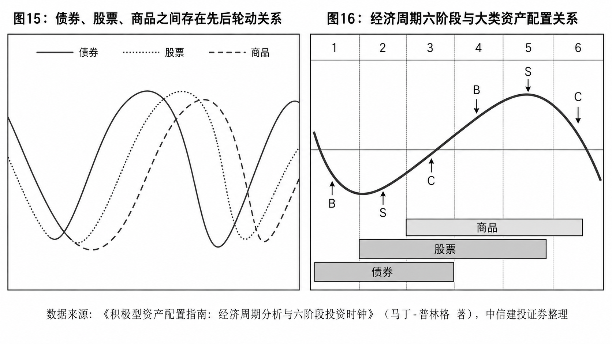
2. 六阶段资产轮动规律 依据债券、股票、大宗商品的趋势涨跌组合，模型将经济周期划分为六个阶段，各阶段对应明确的占优资产：
阶段Ⅰ：仅债券上涨，经济低迷，逆周期调节政策启动；
阶段Ⅱ：债券与股票同步上涨，经济复苏信号确立；
阶段Ⅲ：债券、股票、大宗商品全线上涨，经济步入全面繁荣；
阶段Ⅳ：股票与商品上涨，债券因加息预期开启下跌；
阶段Ⅴ：仅大宗商品上涨，经济进入滞胀阶段，股票市场见顶；
阶段Ⅵ：三类资产全线下跌，经济步入萧条期。
3. 周期阶段识别机制 模型通过三大市场晴雨表 判断周期阶段：分别构建债券、股票、商品晴雨表，各晴雨表整合12-15项经济、金融、技术类成分指标，以50%为临界值判定市场看涨/看跌状态，通过三大市场信号组合锁定当前周期阶段。同时辅以贴现率、领先/同步/滞后经济指标、收益率曲线等工具，精准识别周期转折点。
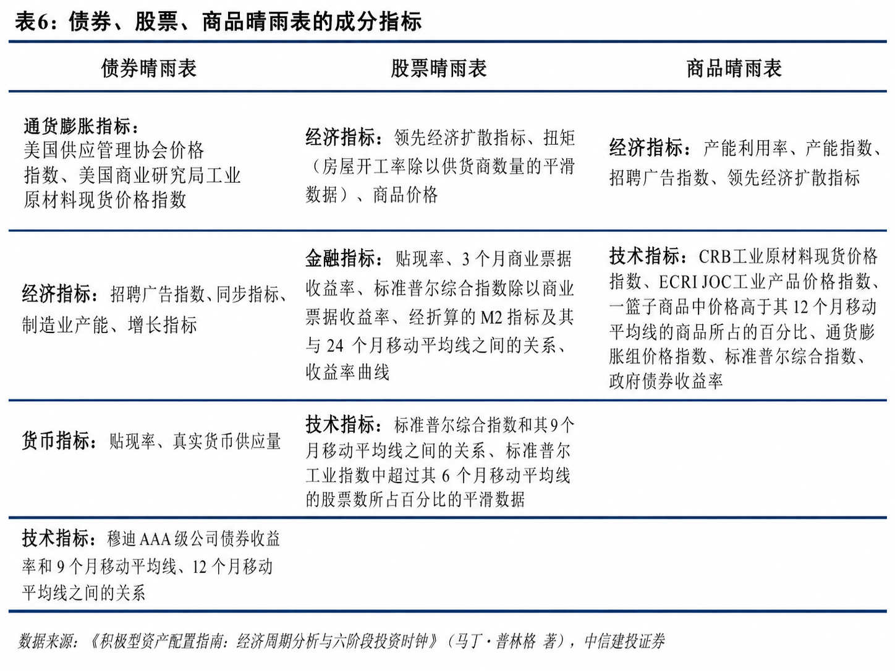
4. 周期运行特征 经济周期并非严格遍历全部六个阶段，实际运行中存在阶段跳跃或阶段性回溯的情况，需结合市场信号动态验证。
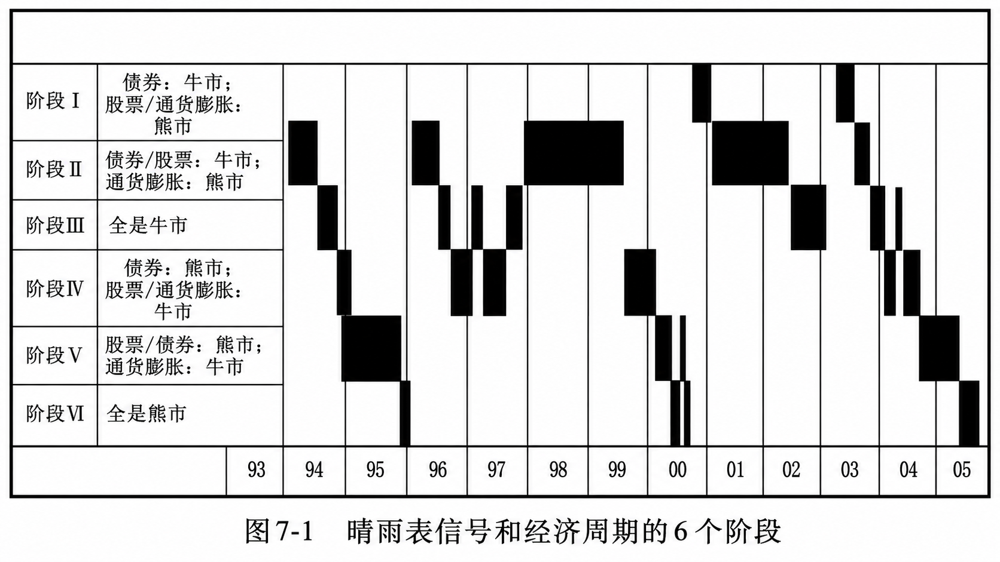
在投资中的运用示例 1. 回测设定 该回测以普林格六阶段周期模型为基础，通过宏观因子判断经济所处阶段，并在股票、债券、商品和现金四类资产之间进行动态轮动配置。策略采用核心—卫星仓位结构，在控制风险分散的同时，重点配置当前周期下的优势资产，以检验该模型在国内大类资产配置中的实践效果。
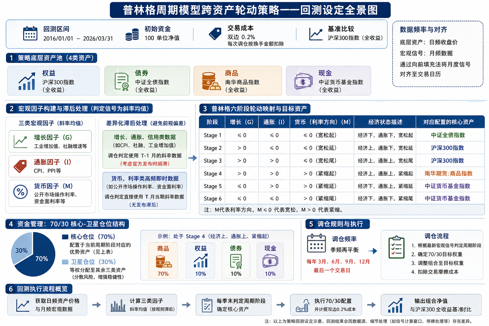
2. 回测结果 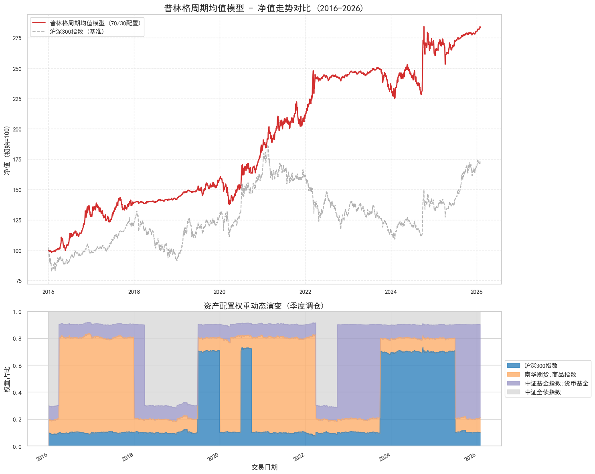
回测结果：
lF0ZCR
年化收益率 最大回撤 年化波动率 夏普比率 卡玛比率 普林格策略(70/30) 10.56% -14.32% 10.74% 0.99 0.74 沪深300(基准) 5.32% -41.56% 18.20% 0.38 0.13
从净值曲线走势来看，传统普林格策略净值呈现稳健抬升态势：在权益市场表现低迷阶段，通过配置债券、商品等非权益资产有效规避下行风险；在权益行情向好时期，则适时增配权益资产以捕捉收益弹性，体现了模型在大类资产择时上的有效性与优越性。从整体绩效维度观察，该策略组合的年化收益率、最大回撤、夏普比率等核心风险收益指标均显著优于沪深 300 指数，实现了长期收益获取与组合稳定性的双重优化。
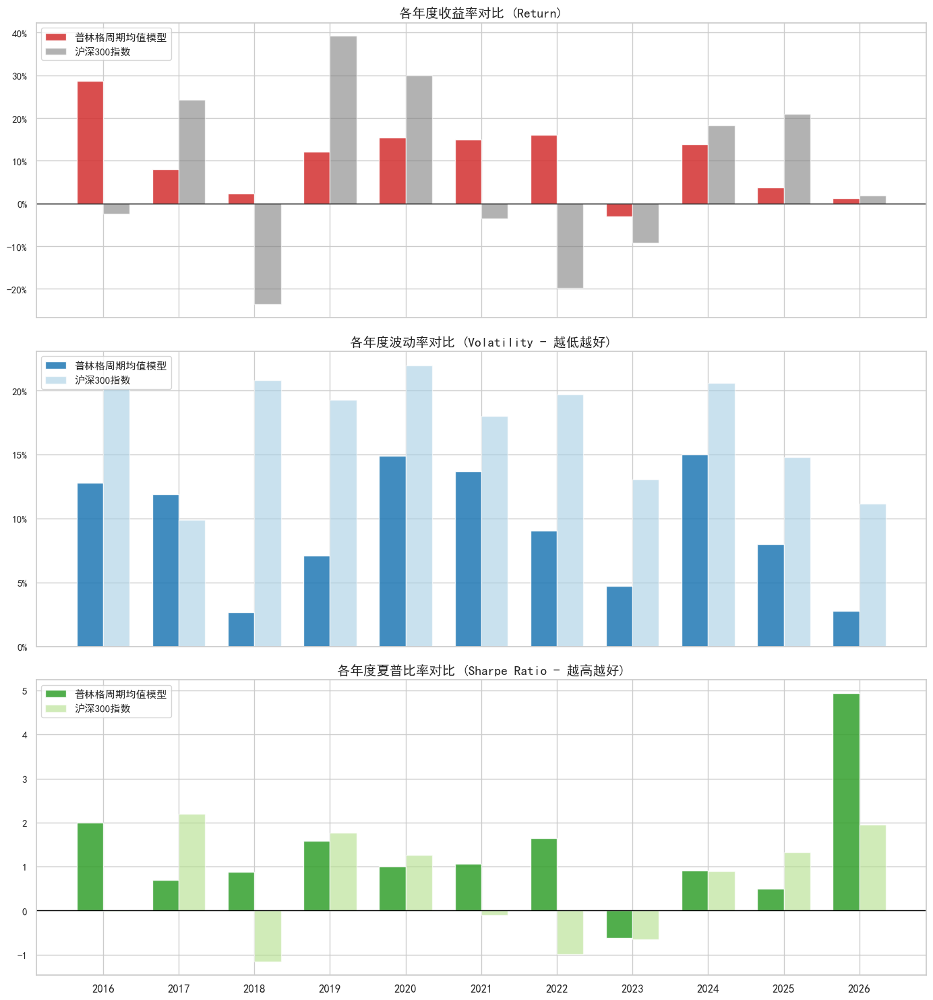
从年度绩效维度分析，传统普林格模型在权益市场弱势环境中具备较强的抗风险能力：2018 年、2022 年沪深 300 指数大幅回撤期间，策略仍实现正收益；2023 年市场持续低迷阶段，收益仅小幅为负。由此可见，在弱势市场环境下，传统普林格模型超额收益显著，避险对冲效果突出。
传统普林格周期模型的缺点 缺点1：牛市表现不佳 从回测结果的年度绩效维度分析可见，传统普林格模型在弱势市场中具备显著超额收益，但在强势市场环境下表现相对乏力。2017年、2019年、2020年及2025年权益市场强势上行阶段，该模型收益率较沪深300指数近乎腰斩，导致组合在部分强势行情年份的持有体验欠佳。
缺点2：资产端存在拖累 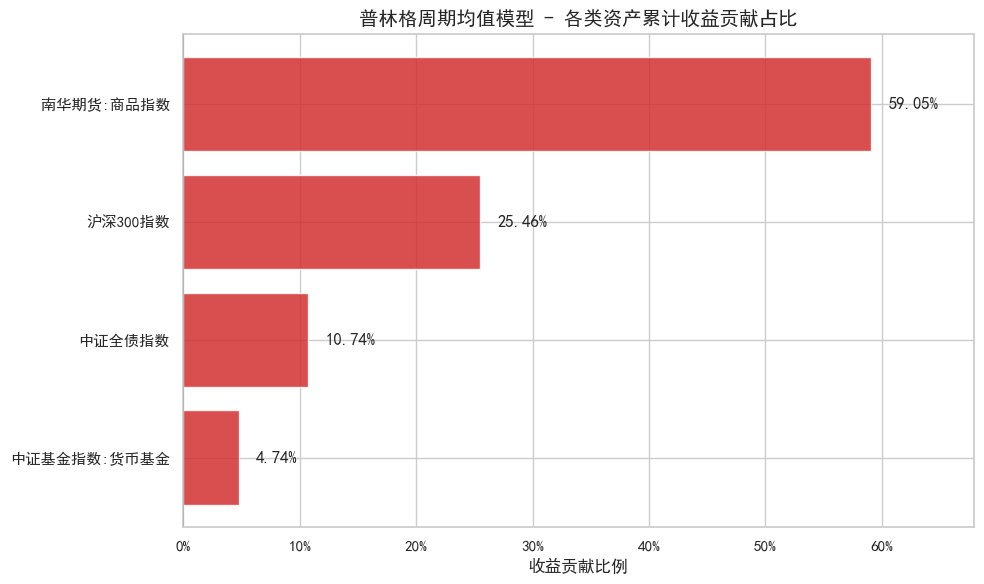
从收益贡献结构来看，策略收益主要来源于商品指数，其次为沪深300指数；而中证转债与货币基金收益贡献微弱，却占用了较高持仓权重，这是传统普林格周期模型在牛市行情中表现偏弱的重要原因之一。
缺点3：过度依赖择时 宏观因子呈月频低频特征，信号滞后且反应迟钝。当策略处于Stage 2（权益重仓阶段）时，若市场突发疫情、政策冲击等黑天鹅事件并快速下行，组合仍维持70%高权益仓位被动承受波动，极易引发难以修复的净值大幅回撤，甚至造成不可逆的净值崩塌。简言之，低频信号下的择时偏差，可能对组合形成毁灭性冲击。
对传统普林格的改良思路 针对缺点1和缺点2——寻找一种可攻可守的资产，在牛熊两种极端行情都能取得不错的收益
针对缺点3——寻找一种止损策略，在风险敞口较大时及时监控风险
普林格新四核轮动模型 新普林格模型做了什么改进 资产端 以可转债指数全面替代货币基金与中证全债指数，同时配置 10% 仓位持有国开债，构建组合避险缓冲。
用沪深300、中证1000、创业板指数、恒生科技指数等权组合替代沪深300（可选：用行业景气度Top4组合替代沪深300）。
风控端 针对 70% 重仓的核心资产（股票或商品），引入日频 20 日均线（MA20）动态监控机制。
常态下，配置10%国开债作为基础避险缓冲。当股票或商品核心主引擎触发MA20逃逸信号时，原配置的70%核心资金将快速撤离，全额转入国开债指数。
新普林格模型是如何运作的 ⭐一图讲解 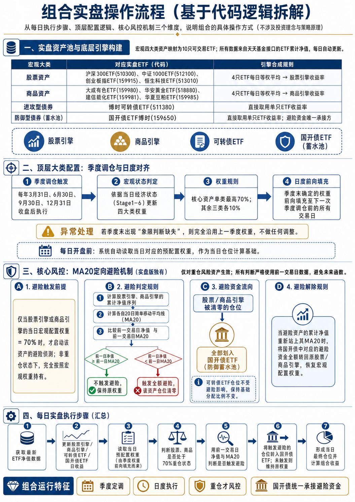
1. 实盘资产池构建 组合将宏观模型中的四大类资产，映射为10只可直接交易的ETF，并通过等权合成方式构建四大核心收益引擎，所有数据均来自天天基金接口的ETF累计净值，每日自动更新。
宏观大类 对应实盘ETF（代码） 引擎合成规则 股票资产 沪深300ETF(510300)、中证1000ETF(512100)、创业板指ETF(159915)、恒生科技ETF(513010) 4只ETF每日等权平均合成股票引擎收益率 商品资产 大成有色ETF(159980)、华安黄金ETF(518880)、建信能化ETF(159981)、华夏豆粕ETF(159985) 4只ETF每日等权平均合成商品引擎收益率 进攻型债券 博时可转债ETF(511380) 直接取用单只ETF收益率 防御型债券（蓄水池） 国开债ETF博时(159650) 直接取用单只ETF收益率，作为避险资金唯一承接方
注：在实盘追踪时由于资金量限制将国开债ETF博时(159650)替换成为中欧纯债LOF（166016）
2. 季度调仓与日度对齐 组合的核心资产配置比例由普林格宏观周期模型驱动，采用季度定调、日度对齐 的执行方式，严格遵循预设调仓规则。
季度调仓触发与执行 调仓时点 ：固定在每年3月31日、6月30日、9月30日、12月31日收盘后执行
调仓依据 ：每个季度对所处阶段进行一次判断：
Stage 1（经济下行、通胀回落、货币宽松启动，G≤0、I≤0、M≤0）：重仓可转债资产
Stage 2（经济上行、通胀回落、货币宽松延续，G>0、I≤0、M≤0）：重仓股票类资产
Stage 3（经济上行、通胀抬升、货币宽松末期，G>0、I>0、M≤0）：重仓股票类资产
Stage 4（经济上行、通胀抬升、货币紧缩启动，G>0、I>0、M>0）：重仓商品类资产
Stage 5（经济下行、通胀抬升、货币紧缩延续，G≤0、I>0、M>0）：重仓可转债资产
Stage 6（经济下行、通胀回落、货币紧缩末期，G≤0、I≤0、M>0）：重仓可转债资产
注：M代表利率方向，所以 m <= 0 代表宽松，m > 0 代表紧缩。
异常处理 ：若季度末无法判定宏观象限（标注“象限判断缺失”），则完全保持上一季度的权重不变 ，不做任何调整
日度权重对齐 为实现每日精准调仓，代码会将季度末确定的权重前向填充至所有交易日 ，即：
两个季度调仓日之间的所有交易日，均使用上一季度末确定的大类权重
每日开盘前，系统自动获取当日对应的预配置权重，作为当日仓位计算的基础
3. 核心风控：MA20定向避险机制 实盘组合在宏观配置的基础上，增加了仅对重仓资产生效 的MA20避险规则，这是与传统普林格模型的核心差异之一，所有判定均严格避免使用未来数据。
避险触发前提 仅当某类风险资产的当日宏观配置权重=70%时，才启动该资产的避险侦测；非重仓状态下，不执行任何避险操作，完全按照宏观权重持有。
避险判定规则 每日收盘后执行以下计算，结果作为下一交易日的调仓依据：
分别计算股票引擎、商品引擎的累计净值序列 （自回测起始日起的复利净值）
计算两个引擎累计净值的20日简单移动平均线（MA20）
对比前一交易日 的累计净值与前一交易日 的MA20：
若 前一日净值 ≥ 前一日MA20：不触发避险，保持原权重
若 前一日净值 < 前一日MA20：触发全额避险，该资产仓位清零
避险资金流向 触发避险后，从股票/商品引擎转出的全部资金 ，一次性划入国开债ETF （防御蓄水池）；可转债ETF的仓位不受避险操作影响，保持基础分配比例不变。
避险解除规则 当避险资产的累计净值重新站上其MA20时，将国开债中对应的避险资金，全额转回原股票/商品引擎，恢复宏观配置权重。
新普林格模型的效果如何 业绩概览 回测起始日：
2021-05-25 （10个ETF的最晚成立日）
回测结果：
0WLTj1
策略 年化 回撤 夏普 波动率 卡玛比率 沪深300ETF(大盘基准) -2.25% -40.38% -0.24 17.68% -0.06 理论原版(无避险满仓) 10.47% -18.40% 0.58 14.48% 0.57 实盘四核终极版(全入纯债底仓) 14.07% -11.15% 0.88 13.68% 1.26
回测曲线及仓位：
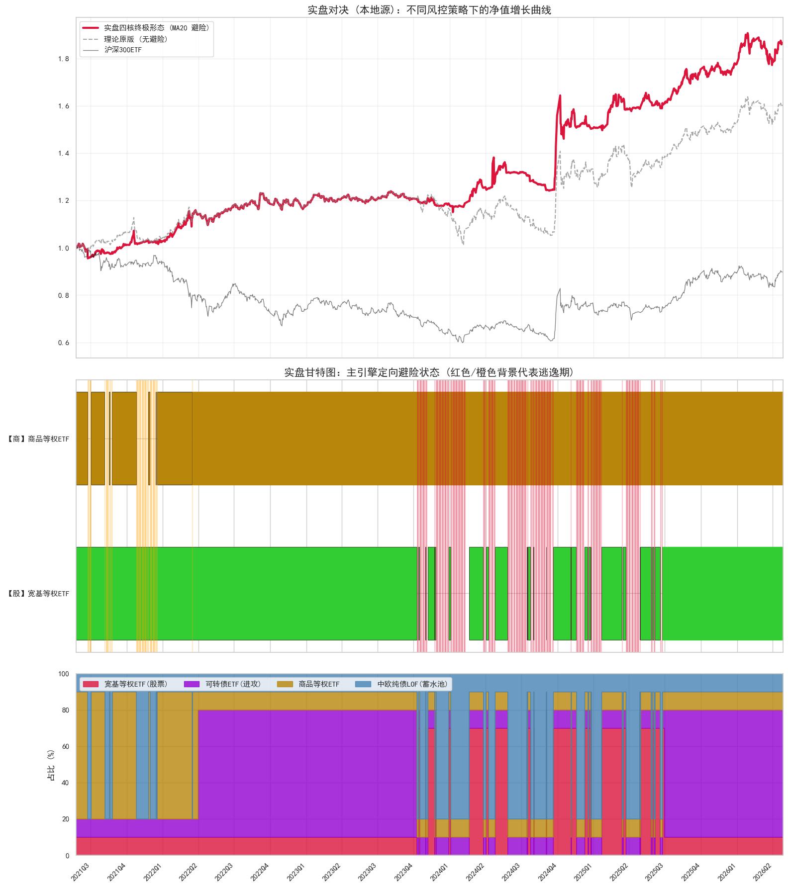
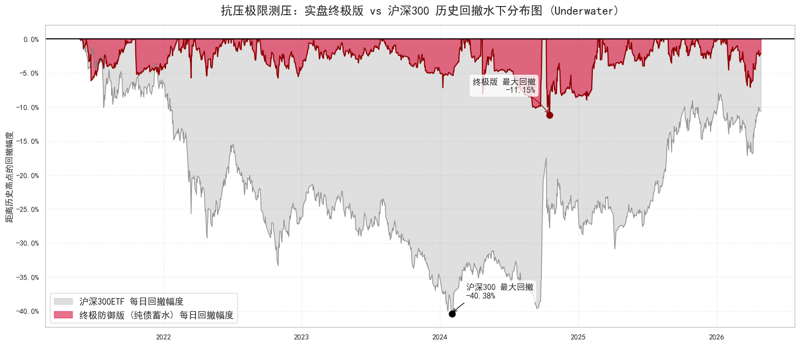
回测结果显示，普林格新四核轮动模型业绩表现显著优异，不仅全面跑赢大盘基准沪深300ETF，风险控制能力同样突出。在2024年初、年末两轮市场深度回撤中，模型均实现精准止损，且在后续市场修复阶段快速同步反弹。
归因分析 收益率归因 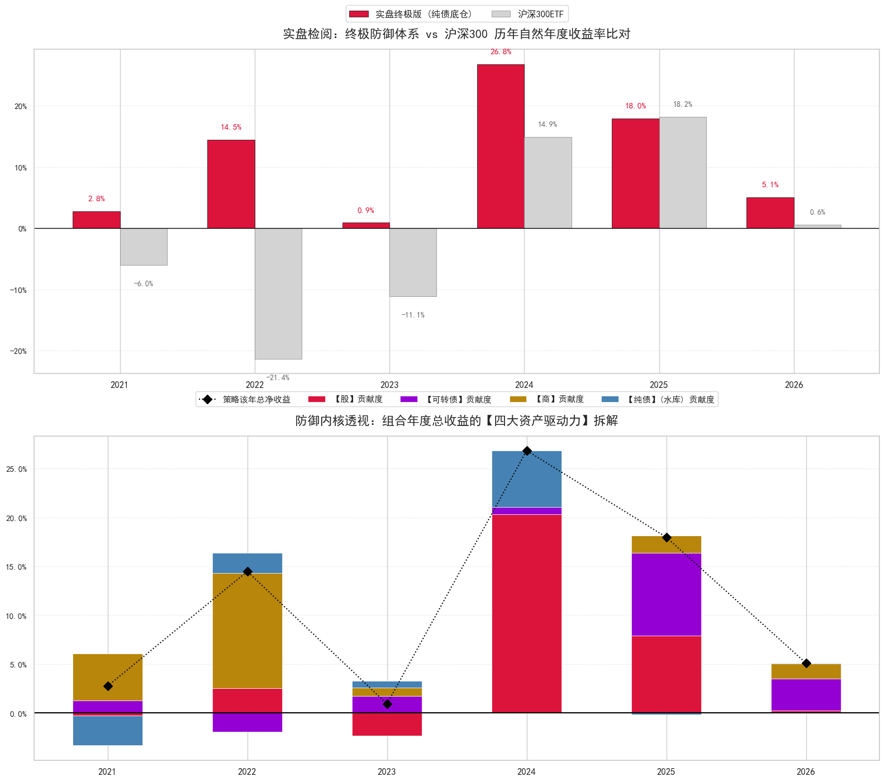
从单年度收益表现来看，股票、商品、可转债三类资产交替贡献收益：2021—2022年商品端为收益主力，2024—2025年股票端收益表现突出，2025—2026年可转债收益贡献显著。
注：2021年避险端国开债收益为负，主要系当时选用LOF产品所致，仅产生短期扰动，对长期收益影响有限。资金规模充足时，替换为博时国开债ETF（159650）可提升收益稳定性。
资产类型贡献归因 四类资产绝对贡献变化图：
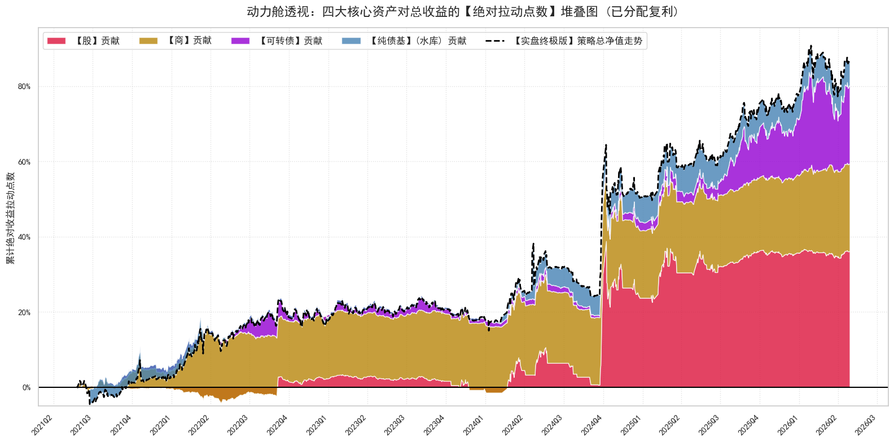
最终情况：
8Qe8I3
资产类别 累积绝对拉动 股票端 36.09% 商品端 23.31% 可转债 20.77% 纯债基 6.53%
四类资产相对变化贡献图：
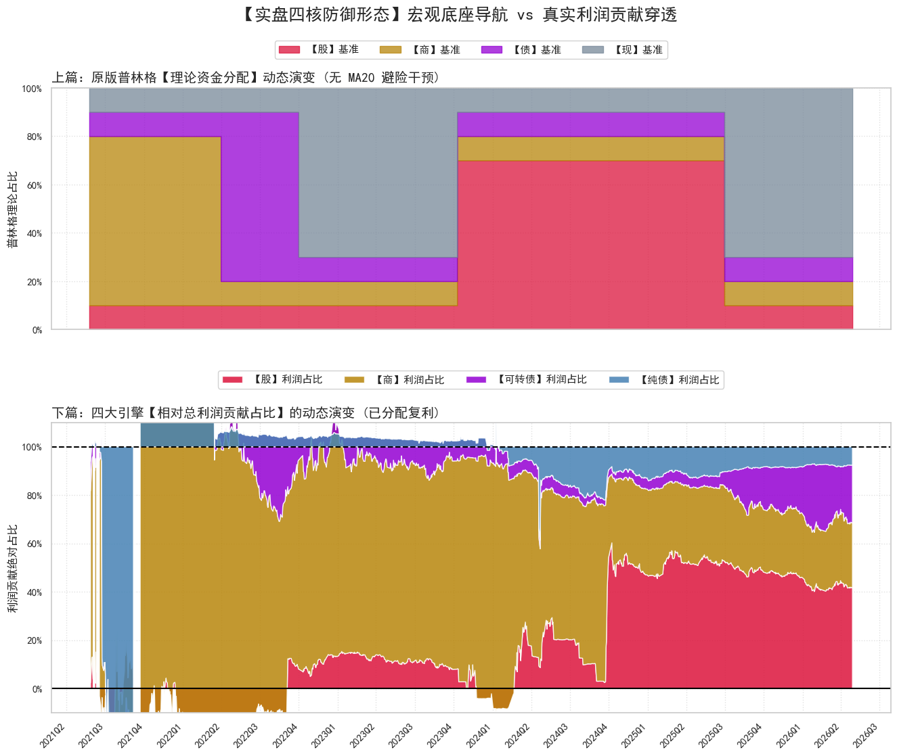
最终情况：
0QHu4U
资产类别 相对总利润贡献占比 股票端 41.60% 商品端 26.90% 可转债 24.00% 纯债基 7.50%
结论：
静态维度上，股票与商品双引擎合计贡献 68.5% 的利润（对应绝对拉动合计 59.4%），是组合收益的核心来源，可转债与纯债基则以合计 31.5% 的贡献形成稳定收益垫；动态维度上，收益贡献呈现明确的阶段切换规律：2021-2024 年商品引擎主导收益，贡献占比长期处于高位，2024 年四季度起股票引擎贡献快速抬升，成为后期收益的主要拉动力量，与宏观周期阶段的资产配置逻辑高度匹配；同时，可转债全程提供稳定收益支撑，纯债基在避险阶段承接资金，体现了策略防守底座的功能，整体收益结构既验证了股商双引擎以较低资金占用撬动超额利润的高资金效率，也凸显了固收类资产的风险缓冲作用，实现了进攻与防守的动态平衡。
投资回报率（ROI）归因 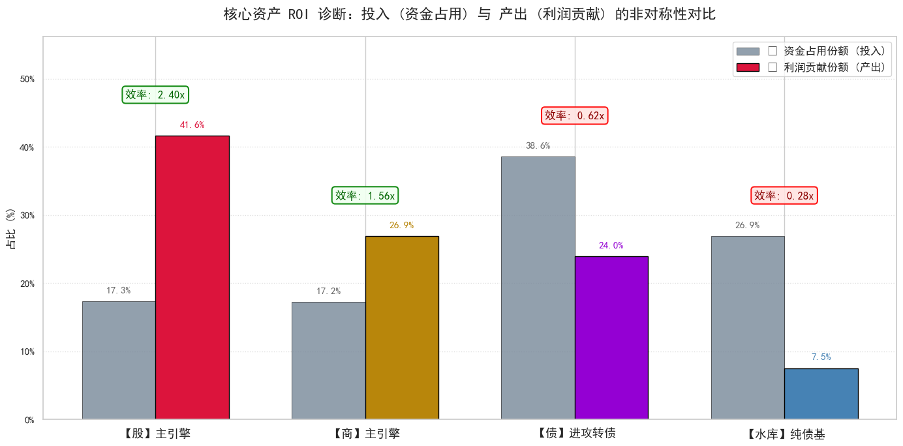
在这部分引入“资金效率倍数（Capital Efficiency Multiple）”这一核心诊断指标，用来计算资产的「利润贡献份额」与「时间加权资金占用份额」之比。
资金效率倍数 > 1.0x：表征该资产具备正向的收益非对称性，即以较少的资本占用撬动了超额利润，属组合的“进攻核”。
资金效率倍数 < 1.0x：表征该资产的利润贡献低于其资本占用，通常承担组合的“防守底座”或流动性管理职能，其低效率部分可视为平滑组合波动所支付的隐性期权费。
股票、商品双引擎效率显著领先，分别达 2.40x、1.56x，以合计约 35% 的资金占用，贡献超 68% 的利润，实现高效超额收益。可转债（0.62x）与纯债基（0.28x）效率低于 1.0x，合计占用 65% 资金，并非低效配置，而是组合尾部风险防控的核心设计：可转债提供全天候收益垫，纯债基作为避险蓄水池，以适度效率牺牲换取极端行情下的回撤保护。
产品解析 风格概述 本产品属于宏观周期驱动、量化风控加持、全天候攻守兼备 的大类资产配置产品，兼具周期轮动的收益弹性与动态避险的抗跌韧性。
产品以普林格周期理论为底层框架，通过股票、商品、可转债、国开债 四核资产协同运作：股票与商品双引擎捕捉周期红利、贡献超额收益，可转债提供全天候收益垫、平滑组合波动，国开债作为避险蓄水池、阻断极端回撤；同时以季度宏观定调、日频 MA20 风控 为核心执行逻辑，形成 “周期择时 + 趋势止损” 的双重防护，整体呈现低波动、稳健增值、回撤可控、穿越牛熊 的风格特征，区别于单一权益或固收产品，是适配全市场环境的均衡型配置工具。
适用人群 本产品适配追求长期稳健收益、厌恶大幅回撤、偏好均衡配置 的投资者，核心适配人群如下：
稳健型及进取稳健型投资者：既希望捕捉市场结构性机会、获取高于固收的收益，又无法承受权益市场 20% 以上的深度回撤，追求 “收益稳、波动小、回撤可控” 的配置体验；
长期资金配置需求者：包括个人高净值客户、家庭长期理财资金、企业闲置资金等，投资周期 1-3 年及以上，无需频繁择时，依赖系统化策略实现资产长期保值增值；
大类资产配置参与者：已有股票、基金、债券等基础资产配置，希望通过本产品补充周期轮动 + 极端避险 能力，优化组合收益风险比、分散单一资产风险；
风险厌恶型进阶投资者：不满足于货币基金、纯债基的低收益，又担忧纯权益资产的高波动，倾向于 “进攻有收益、防守有底线” 的平衡型产品。
普林格周期模型 （一）历史背景 普林格周期模型（Pring Business Cycle）的提出，并非是学院派经济学家在象牙塔中的理论推演，而是实战派技术分析师 为了应对当时日益复杂的金融市场，特别是为了解决单一资产分析的局限性 而产生的。
它主要是由 马丁·普林格（Martin J. Pring） 在 20 世纪 70 年代末到 80 年代初逐步形成并完善的。
以下为你详细阐述其提出的历史背景 以及当时试图解决的核心痛点 ：
1. 时代背景：动荡的 70 年代与“滞胀”的冲击 要理解普林格模型，必须回到 20 世纪 70 年代的美国金融市场 。那是二战后金融秩序最混乱、波动最剧烈的时期之一。
旧经验失效 ：在 50-60 年代，经济增长通常伴随着温和通胀，股票是最好的资产。但到了 70 年代，美国遭遇了严重的“滞胀”（经济停滞+高通胀）。
股债双杀 ：传统的“股债平衡策略”（60/40组合）在 70 年代遭到了毁灭性打击。通胀高企导致债券暴跌，而经济停滞导致股票暴跌。投资者发现，手里拿着股票和债券都赚不到钱，反而是以前不被主流资金看重的大宗商品（黄金、石油）一飞冲天 。
利率管制的解除 ：70 年代末到 80 年代初，美国开始利率市场化改革，美联储主席保罗·沃尔克（Paul Volcker）为了抗击通胀大幅提升利率。这使得利率（债券价格）成为了驱动市场的核心变量。
背景总结： 市场环境从“低通胀、高增长”变成了“高通胀、高波动”，投资者急需一套能解释为什么股票和债券同时跌 ，以及什么时候该买入商品 的理论。
2. 它是为了解决当时什么问题？ 普林格模型的提出，本质上是为了解决当时投资界和经济学界存在的三个“脱节”问题：
问题一：宏观经济数据“太慢”了（时效性问题） 当时的困境： 传统的经济学家依赖 GDP、失业率等数据来判断经济周期。但这些数据是滞后指标 （Lagging Indicators）。往往等 GDP 确认衰退时，股市已经跌了一半了；等数据确认复苏时，股市已经反弹了。
普林格的解决方案： 他提出“市场价格本身就是领先指标 ”。
他发现金融市场（债券、股票、商品 ）对经济的反应比统计局的数据要快得多。
他试图解决的问题是：如何不看滞后的GDP，而是看 实时的资产价格 来推导现在的经济阶段？
问题二：单一市场分析的“盲人摸象”（关联性问题） 当时的困境： 当时的股票分析师只看股票（看市盈率、看K线 ），债券交易员只看利率。但 70 年代的经验表明，股票的顶往往是由债券（利率）决定的，而债券的底往往是由商品（通胀）决定的 。
普林格的解决方案： 他引入了跨市场分析（Intermarket Analysis）
如果不看债券（流动性闸门）和商品（通胀源头），就无法准确预测股票 。
他解决了“孤岛式分析”的问题，建立了一个联动模型：利率 → 经济 → 通胀。
问题三：对“通胀”缺乏动态的应对策略（资产配置问题） 当时的困境： 传统投资模型很少把大宗商品 作为一个独立的核心资产类别。但在高通胀年代，忽视商品就等于忽视了最大的收益来源。
普林格的解决方案： 他将商业周期细分为六个阶段，特别强调了通胀上升（阶段4、5）和通胀下降（阶段1、2）对资产配置的决定性影响。
这解决了“全天候配置”的问题：无论通胀是起是落，总有一类资产（债、股或商品）是上涨的。
（二）模型相关理论 第一阶段：雏形期——从“经济数据”到“跨市场价格” (1980s - 1990s) 这一阶段是普林格理论的奠基期。核心突破在于脱离了传统经济学对GDP滞后数据的依赖，确立了“金融资产价格作为领先指标”的跨市场分析框架。
历史背景： 70年代的“滞胀”让只看股票或只看债券的传统分析师频频失误，市场急需一种能解释股债商品联动关系的理论。
核心文献：
Martin Pring, Technical Analysis Explained (早期版本)
结论： 技术分析不仅适用于个股，更适用于宏观资产类别。趋势是联动的。
John Murphy, Intermarket Technical Analysis (1991)
注：虽然作者是墨菲，但与普林格同期，共同奠定了跨市场分析的基础。
结论： 确立了美元 ↔ 大宗商品 ↔ 债券 ↔ 股票的四维传导链条。
阶段性理论成果：
领先滞后法则： 确立了“债券市场通常领先股票市场见顶/见底，股票市场通常领先大宗商品市场 ”的基本时序。
第二阶段：成型期——“六阶段模型”的系统化 (1990s - 2002) 这是普林格模型最经典的时期。他将上述的领先滞后关系进行了数学上的排列组合，正式提出了“六阶段”商业周期模型，并将其命名为“全天候投资”。
历史背景： 90年代美国经济经历了“大缓和”（Great Moderation），周期特征明显，非常适合模型化。
核心文献：
Martin Pring, The All-Season Investor (1992)
结论： 正式定义了六个阶段（Stage I-VI） 。提出没有任何一种资产能穿越所有周期，必须进行轮动（Rotation） 。
美林证券 (Merrill Lynch), The Investment Clock (2004)
注：这是机构对普林格理论的变体验证。
结论： 虽然使用的是“产出缺口+CPI ”作为坐标，但其结论与普林格的资产轮动逻辑高度一致（复苏买股、过热买商品、滞胀买现金、衰退买债 ）。
阶段性理论成果：
排列组合法： 只要确认 Bond(B) 、Stock(S) 、Commodity(C) 的趋势方向（涨/跌），就能唯一确定当前的经济周期阶段。
第三阶段：深化期——板块轮动与ETF实战化 (2005 - 2015) 随着ETF市场的爆发，理论研究从“大类资产”下沉到了“股票行业板块” 。学者们开始验证普林格模型在行业轮动（Sector Rotation）中的有效性。
历史背景： 互联网泡沫破裂后，市场发现同为股票，科技股和能源股在周期不同阶段的表现截然相反。
核心文献：
Stovall, Standard & Poor's Sector Rotation Model (1996/updated 2000s)
结论： 验证了普林格周期的细分应用：早期周期（Stage I/II）应超配金融、可选消费；晚期周期（Stage IV/V）应超配能源、基础材料。
Conover et al., Sector Rotation and Monetary Conditions (2005/2008)
结论： 学术实证表明，基于货币环境（利率周期，即普林格模型的第一驱动力）进行板块轮动，能产生显著的超额收益（Alpha） 。
阶段性理论成果：
板块映射图谱： 将普林格的六阶段与GICS行业分类标准进行了对应（例如：阶段I → 金融；阶段III → 工业；阶段V → 能源）。
第四阶段：前沿与修正期——量化机制转换与新常态 (2016 - 至今) 这是当前的学术前沿。研究重点在于解决普林格模型在“量化宽松(QE)”和“通胀回归”环境下的失效问题，以及引入机器学习进行信号识别。
历史背景： 2008年后央行长期扭曲利率，导致债券失去信号功能；2022年股债相关性由负转正，传统对冲失效。
核心前沿文献与议题：
关于“机制转换”的量化研究
文献方向： Kritzman et al. (MIT Sloan) 等学者关于 Markov Regime Switching (马尔可夫机制转换) 的研究。
核心观点： 传统的普林格模型依靠移动平均线判断趋势太慢了。前沿方法使用“隐马尔可夫模型 (HMM)”来基于资产波动率和相关性，通过算法自动识别当前处于哪个“隐藏状态”（即普林格阶段） ，而不是人工判断。
关于“股债相关性崩溃”的修正
文献方向： AQR Capital, Bridgewater 等对冲基金的周期研究报告 (e.g., Stock-Bond Correlation in a High Inflation World )。
核心观点： 普林格模型假设股债在部分阶段负相关（债涨股跌或债跌股涨）。但文献指出，当通胀波动率 超过一定阈值（如2.5%），股债会呈现正相关（同涨同跌，如2022年）。
理论修正： 现代普林格模型必须引入“通胀波动率”作为第四个维度 ，修正“股债双牛”或“股债双杀”的概率权重。
关于“加密资产”的周期归类
文献方向： Liu & Tsyvinski, "Risks and Returns of Cryptocurrency" (2018/2020) 等。
核心观点： 试图将比特币纳入周期模型。目前的初步结论是：加密货币在周期模型中表现出“超高贝塔科技股”的特征（对应阶段II的爆发），而非“数字黄金”（对应阶段V的避险）。
（三）模型原理 普林格周期的核心贡献在于将经济周期细分为 6 个阶段 ，并精准定义了债券、股票、大宗商品这三大类资产的“见底”和“见顶”顺序。在投资实务中，普林格周期被视为一种“接力”逻辑，其理论演进体现在对资产波峰波谷的捕捉：
传导逻辑的确立： 普林格认为经济放缓首先导致利率下降（债券见底回升 ），随后刺激企业盈利预期（股票见底回升 ），最后经济过热带动通胀（商品见底回升 ）。
“三市轮动”策略： 业界将普林格的 6 个阶段转化为量化策略：
阶段 1： 仅债券涨（经济极度低迷）。
阶段 2： 债券+股票涨（复苏开启）。
阶段 3： 债券+股票+商品全涨（经济繁荣期）。
阶段 4： 仅股票+商品涨（债券因加息开始下跌）。
阶段 5： 仅商品涨（经济过热，股市见顶）。
阶段 6： 三者全跌（进入衰退）。
普林格周期脱胎于美林时钟模型，在美林时钟模型增长/通胀的基础上加入信贷指标来更好的适应货币主义时代。在普林格周期中，使用先行指标（M1、M2同比），同步指标（GDP同比、工业增加值同比），滞后指标（PPI同比）三个指标来衡量经济周期，将经济周期划分为六个阶段 ，并计算了在上述各个阶段中各类资产的回报率和股票不同风格回报率，结果表明，在经济周期各个阶段的轮换中，不论是大类资产还是股票风格，其收益率均有所分化，优势品种有超越大市的表现，具体周期划分以及表现如下图。
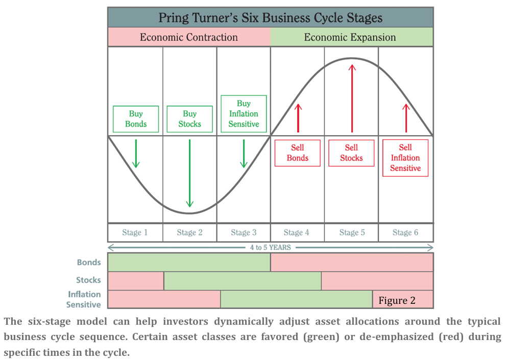
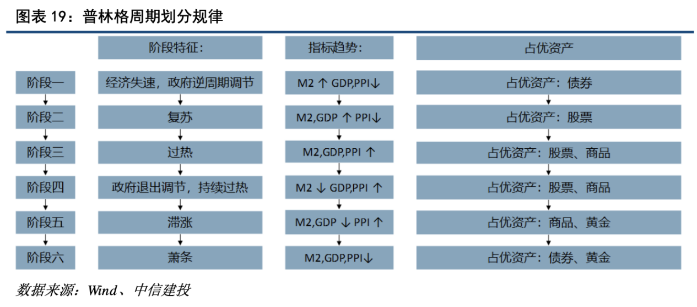
在经济周期第一阶段， 央行仍实行宽松的货币政策，继续增加货币供应量，推行各种财政政策刺激经济。从资产配置的角度看，此时一般短期利率会上行，同时债市经历熊市之后也将迎来拐点，因此债券与现金成为这一时刻的优质资产。但是在这一阶段，生产与通胀仍处于下降区间，高波动资产依然有相当高的风险，不建议配置。
在经济周期第二阶段， 通货膨胀继续回落，GDP增长率开始上升，虽然闲置的生产力还没有完全的利用起来，但企业的利润率已企稳开始回升，同时央行为了使经济全面恢复会持续增加货币供给。从资产配置的角度看，这时权益市场筑底完成，是配置的最佳时期，建议高配。
在经济周期第三阶段， 三指标同步上行，经济全面恢复，企业利润率高速上行。从资产配置角度看，此时各行各业生产力火力全开，对原材料需求较高，商品迎来行情，此使股票受益于企业基本面快速抬升以及经济上行的预期会获得普涨，此阶段建议高配股票和商品。
在经济周期第四阶段， 生产增长开始减缓，通货膨胀上升。GDP增长虽然在上升，但增速已明显放缓，为抑制过热的投资，央行开始加息减少货币供应量。从资产配置角度看，由于股票投资收益依赖企业的利润率和利率水平，商品是最佳的资产配置选择，同时股票也有一定的配置价值，但是需要重点关注盈利支撑。
在经济周期第五阶段， GDP增长降低到长期增长趋势以下，但是通货膨胀依然继续上升，经济进入滞胀阶段。从资产配置角度看，权益市场已经疲态初现，不建议配置，而商品处于最后的疯狂，可以配置但是有一定的风险，此时黄金成为最优资产。
在经济周期第六阶段， 三指标同步下行，经济增长严重乏力，从而导致了通货膨胀开始下降，企业利润率也遭遇滑铁卢。从资产配置角度看，此时建议配置避险属性明显的黄金与债券，其中债券以现金更优。
另外值得注意的是，普林格提到，不是所有的经济周期都会经历所有的六个阶段，偶尔经济周期会跳过1个阶段，也可能倒退到上一个阶段。
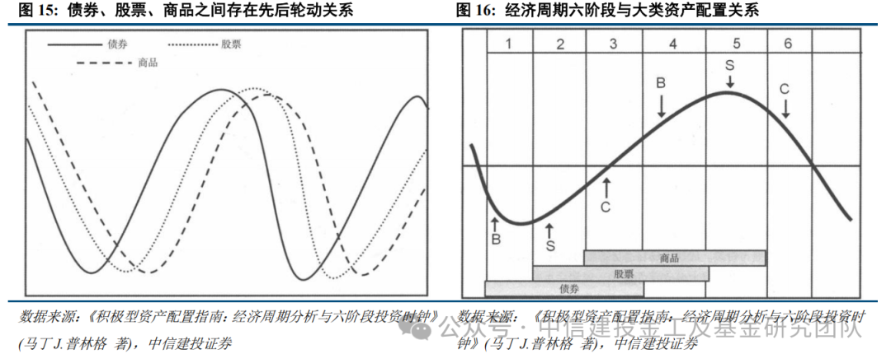
关于如何运用模型识别经济周期中的不同阶段，普林格构建了债券、股票和商品的晴雨表来判断三个市场的上行或下行，进而确定所处的经济周期阶段。
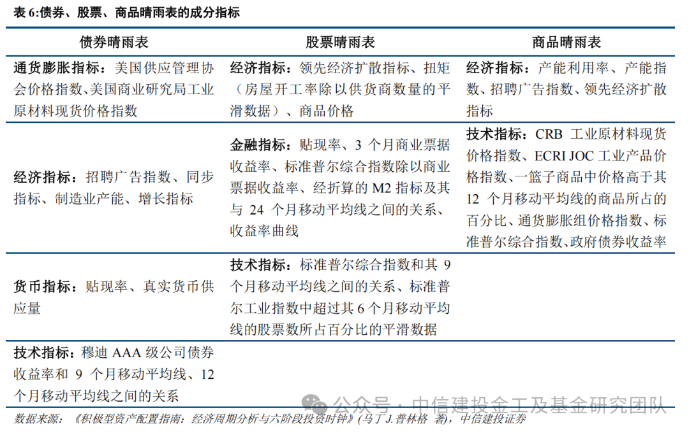
此外，普林格也进一步提出应用易于遵循的指标来识别经济周期各阶段的转折点，如：贴现率、领先经济指标、同步经济指标、滞后指标、收益率曲线、领先指标/滞后指标比率、股票/商品比率、扭矩指标、商品/债券比率。
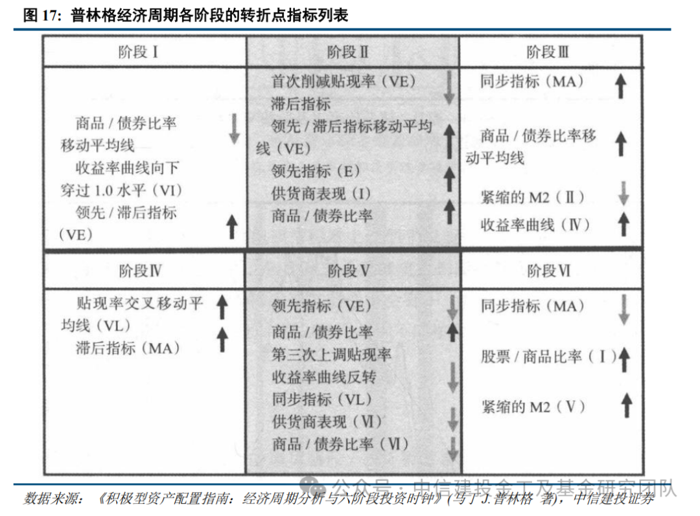
普林格周期判断的因子依据 宏观因子在普林格中发挥的作用 在普林格周期6个阶段的判断中，我们用了三个宏观因子来定位当前所处的周期位置：
增长因子 (Growth) ：代表经济的扩张或收缩。
通胀因子 (Inflation) ：代表物价的涨跌。
货币因子 (Monetary) ：代表利率环境的宽松（下行）或紧缩（上行）。
因子的状态直接决定我们的重仓资产：
Stage 1（经济下行、通胀回落、货币宽松启动，G≤0、I≤0、M≤0）：重仓可转债资产
Stage 2（经济上行、通胀回落、货币宽松延续，G>0、I≤0、M≤0）：重仓股票类资产
Stage 3（经济上行、通胀抬升、货币宽松末期，G>0、I>0、M≤0）：重仓股票类资产
Stage 4（经济上行、通胀抬升、货币紧缩启动，G>0、I>0、M>0）：重仓商品类资产
Stage 5（经济下行、通胀抬升、货币紧缩延续，G≤0、I>0、M>0）：重仓可转债资产
Stage 6（经济下行、通胀回落、货币紧缩末期，G≤0、I≤0、M>0）：重仓可转债资产
注：M代表利率方向，所以 m <= 0 代表宽松，m > 0 代表紧缩。
统一进行的技术处理 虽然增长因子、通胀因子和货币因子的底层指标不同，但三者在构建时遵循一致的技术原则。
1. 数据清洗 模型首先对原始宏观数据进行清洗，包括日期格式统一、数值格式转换、无效行删除、缺失值处理等。对于部分带有 Wind 元数据行的表格，例如“频率”“单位”“指标ID”“来源”等说明性内容，模型会在读取时自动剔除。
2. 历史样本长度约束 增长因子和通胀因子均要求候选指标至少拥有约 180 个月的有效历史样本。该设计主要是为了保证指标具有足够长的历史统计基础，避免短样本指标在相关性筛选和标准化过程中产生不稳定影响。增长因子和通胀因子的代码中均设置了 MIN_VALID_MONTHS = 180 的门槛。
货币因子同样设置了 180 个月的样本长度检查，用于提示基础利率序列的历史长度是否充足。
3. 单边滚动处理，避免未来函数 三类因子均强调实盘可用性，因此均采用单边滚动处理方式。也就是说，在计算任意历史时点的因子值时，模型只使用该时点及之前已经能够观察到的数据，不使用未来数据。
这一设计非常重要。传统全样本滤波在计算历史周期项时会使用未来信息，容易造成回测信号过于理想化。本模型使用单边处理方式，使历史因子更接近真实投资决策时能够获得的信号。
4. 周期提取 增长因子和通胀因子均使用 STL 分解与 HP 滤波提取周期项。STL 分解用于剥离月度数据中的季节性波动，HP 滤波用于从趋势—周期成分中进一步提取短中期周期波动。两类因子的 HP 滤波参数均设定为 14400。
货币因子由于基础变量为短端利率，不再进行 STL 季节分解，而是直接对 1 年期国债收益率进行单边 HP 滤波，提取利率相对于长期趋势的周期偏离。
增长因子合成方法 1. 增长因子的定位 增长因子用于刻画经济增长动能的周期性变化。它并不是简单复刻某一个经济指标，而是从多项实体经济指标中提取能够同步或领先反映制造业景气变化的共同信号。
模型以制造业 PMI 作为增长周期的基准锚。PMI 具有发布频率稳定、市场关注度高、能够较快反映企业生产经营景气变化等特点，因此适合作为经济增长周期的参照指标。
增长因子的核心目标是识别经济动能处于改善还是走弱状态，并进一步服务于宏观阶段划分。
2. 增长因子的原始指标池 增长因子的原始指标池主要覆盖实体经济活动，包括：
工业生产类指标，例如工业增加值、发电量、汽车产量、挖掘机产量、乙烯产量等。
投资与基建类指标，例如基础设施建设投资、房地产建筑工程投资等。
交通与物流类指标，例如港口货物吞吐量、公路货物周转量、铁路货运量等。
外需与贸易类指标，例如进出口总值等。
这些指标共同反映生产、投资、施工、物流和外需等多个维度的经济活动，有助于降低单一指标异常波动对宏观判断造成的干扰。
3. 增长因子的预处理方法 在增长数据中，部分指标以“累计值”的形式发布。累计值通常存在跨年重置问题，若直接用于周期提取，容易产生人为断点。
因此，模型会先将累计指标转换为当月值。对于普通月份，使用本月累计值减去上月累计值；当检测到跨年重置时，直接使用当前月份累计值作为当月值。这样可以尽量还原每个月真实发生的经济活动量。
完成预处理后，所有增长指标都被统一为更适合横向比较和周期提取的月度口径。
4. 增长因子的周期提取与筛选 模型对每个增长类指标进行单边 STL 分解和 HP 滤波，提取其周期项。对于任意月份，模型只使用该月及以前的数据进行滤波，避免未来函数。
随后，模型将每个候选指标的周期项与 PMI 周期项进行领先滞后相关性检验。检验窗口为 0 至 12 个月。也就是说，模型会判断每个指标是否能够同步或提前反映 PMI 所代表的增长周期。
筛选规则为：保留与 PMI 周期项正相关且相关性超过 0.25 的指标。最终选择相关性最高的前 5 个指标作为增长因子的底层成分。
根据当前模型逻辑，增长因子的代表性入选指标包括：
YGAvm2
指标名称 最大相关性 领先月数 汽车：产量：当月值 0.654 1 挖掘机：产量：当月值 0.632 0 固定资产投资 (不含农户) 完成额：基础设施建设投资：折算当月值 0.503 4 发电量：当月值 0.44 0 房地产开发投资完成额：建筑工程：折算当月值 0.291 1
5. 增长因子的合成方式 入选指标的周期项不能直接相加，因为不同指标量纲和波动幅度不同。因此，模型先对每个指标进行滚动标准化。
具体方法是使用过去 36 个月的滚动均值和滚动标准差计算 Z-Score，并要求至少有 24 个月有效样本后才开始计算。标准化后的数值表示该指标当前周期水平相对于自身过去三年历史状态的偏离程度。
随后，模型对前 5 个指标的滚动 Z-Score 进行等权平均，并进行 3 个月滚动平滑，得到最终增长因子。
增长因子的合成路径可以概括为：
原始增长指标 → 数据清洗 → 累计值转当月值 → 单边 STL 去季节 → HP 滤波提取周期项 → 与 PMI 做领先相关性筛选 → 前 5 个指标滚动 Z-Score → 等权平均 → 3 个月平滑 → 增长因子。
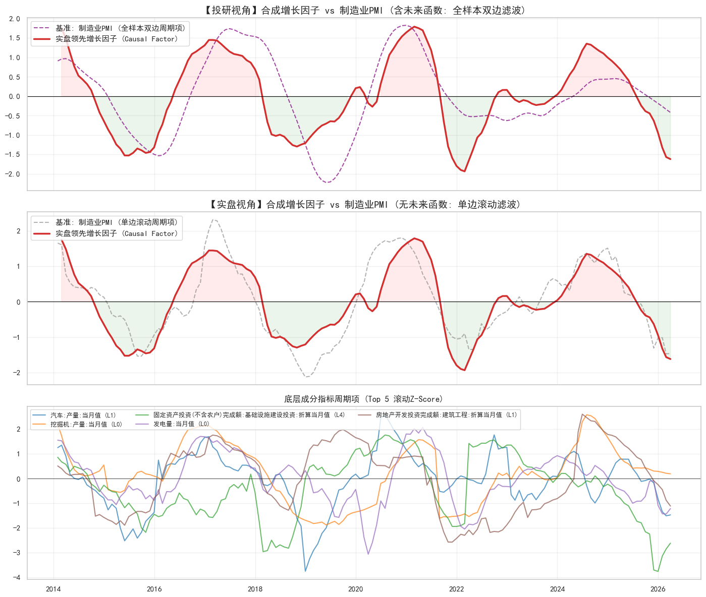
6. 增长因子的投资含义 增长因子大于 0，通常说明实体经济动能高于近期历史均衡水平，增长环境偏强。
增长因子小于 0，通常说明实体经济动能低于近期历史均衡水平，增长环境偏弱。
除了水平高低，因子的边际方向同样重要。根据增长因子水平和斜率，可以划分为四类状态：
pkFuVr
增长因子水平 因子斜率 增长状态 含义 大于 0 上行 扩张 增长动能强，且仍在改善 大于 0 下行 放缓 增长仍处高位，但边际转弱 小于 0 下行 衰退 增长动能弱，且继续恶化 小于 0 上行 复苏 增长仍偏弱，但边际改善
在资产配置中，增长因子上行通常对股票类资产和可转债更友好；增长因子下行时，组合需要更加关注防御性资产和政策对冲信号。
通胀因子合成方法 1. 通胀因子的定位 通胀因子用于刻画广义价格压力的周期变化。与单独观察 CPI 或 PPI 不同，本模型希望从更广泛的价格体系中提取共同通胀信号，包括居民消费价格、工业品价格、大宗商品价格、能源价格和中上游原材料价格等。
通胀因子的核心作用是识别当前宏观环境中的价格压力是增强还是缓和，并为商品类资产、债券类资产和其他风险资产的配置判断提供依据。
2. 通胀因子的原始指标池 通胀因子的原始指标池主要包括三类。
第一类是官方通胀指标，包括 CPI 和 PPI。CPI 更偏向居民消费端价格变化，PPI 更偏向工业生产端价格变化。
第二类是农产品和消费品价格，例如猪肉、玉米、豆粕等，用于反映食品价格和生活资料价格变化。
第三类是工业品和大宗商品价格，例如 WTI 原油、Brent 原油、铜、铝、铅、锌、CRB 现货指数、纺织价格指数等。这类指标对输入型通胀、工业成本压力和商品周期更加敏感。
3. 通胀因子的预处理方法 由于通胀指标的原始口径并不完全一致，模型首先将所有价格指标统一转换为同比口径。
对于以环比形式发布的指标，模型先将环比变化累乘为价格指数，再计算该指数相较于 12 个月前的变化率，得到估算同比。
对于以价格水平形式发布的指标，模型直接计算其相较于 12 个月前的百分比变化，得到同比增速。
统一为同比口径后，不同价格指标之间具有更好的可比性，也更符合投资者对通胀压力的直观理解。
4. 广义通胀基准的构建 通胀因子并不是直接以 CPI 或 PPI 作为唯一基准，而是使用 CPI 与 PPI 构建“广义通胀指数”。
CPI 代表消费端价格，PPI 代表生产端价格。仅观察 CPI 可能低估上游工业品价格冲击，仅观察 PPI 又可能忽略居民消费价格变化。因此，将二者结合更能反映整体通胀环境。
模型采用动态波动率倒数加权方法构建广义通胀基准。具体来说，模型使用截至当期为止的扩展窗口标准差衡量 CPI 和 PPI 的历史波动，并给予波动率较低、稳定性更高的指标更高权重，给予波动率较高的指标较低权重。
这一设计避免了人为设定固定权重，同时也不使用未来数据，符合实盘投资要求。
5. 通胀因子的周期提取与筛选 模型首先对广义通胀基准进行单边 STL 分解和 HP 滤波，得到广义通胀周期项。随后，对候选价格指标也进行相同的周期处理。
接下来，模型对每个候选指标与广义通胀周期项进行 0 至 12 个月的领先滞后相关性检验。若某个指标与广义通胀基准的最大正相关性超过 0.3，则认为该指标对通胀周期具有较强解释力。
最终，模型选择相关性排名最高的前 5 个指标作为通胀因子的底层成分。
根据当前模型逻辑，通胀因子的代表性入选指标包括：
xcjcoz
指标名称 最大相关性 领先月数 柯桥纺织：价格指数：总类：月: 平均值：同比 0.835 6 现货价：WTI 原油：月: 平均值：同比 0.833 2 CRB 现货指数：综合：月: 平均值：同比 0.818 4 CRB 现货指数：工业：月: 平均值：同比 0.804 4 CRB 现货指数：食用油：月: 平均值：同比 0.785 3
这些指标大多位于通胀传导链条的中上游，因此能够较早反映成本端和输入型通胀压力。
6. 通胀因子的合成方式 与增长因子类似，通胀因子也需要对底层指标进行滚动标准化。
模型使用过去 36 个月的滚动均值和滚动标准差计算各指标的 Z-Score，并要求至少 24 个月有效样本才开始计算。标准化后的数值表示该价格指标当前通胀压力相对于自身过去三年历史状态的偏离程度。
随后，模型对前 5 个入选指标进行等权平均，并进行 3 个月滚动平滑，形成最终通胀因子。
通胀因子的合成路径可以概括为：
原始价格指标 → 统一转换为同比 → 构建 CPI/PPI 动态加权广义通胀基准 → 单边 STL 去季节 → HP 滤波提取周期项 → 领先相关性筛选 → 前 5 个指标滚动 Z-Score → 等权平均 → 3 个月平滑 → 通胀因子。
合成效果如下：
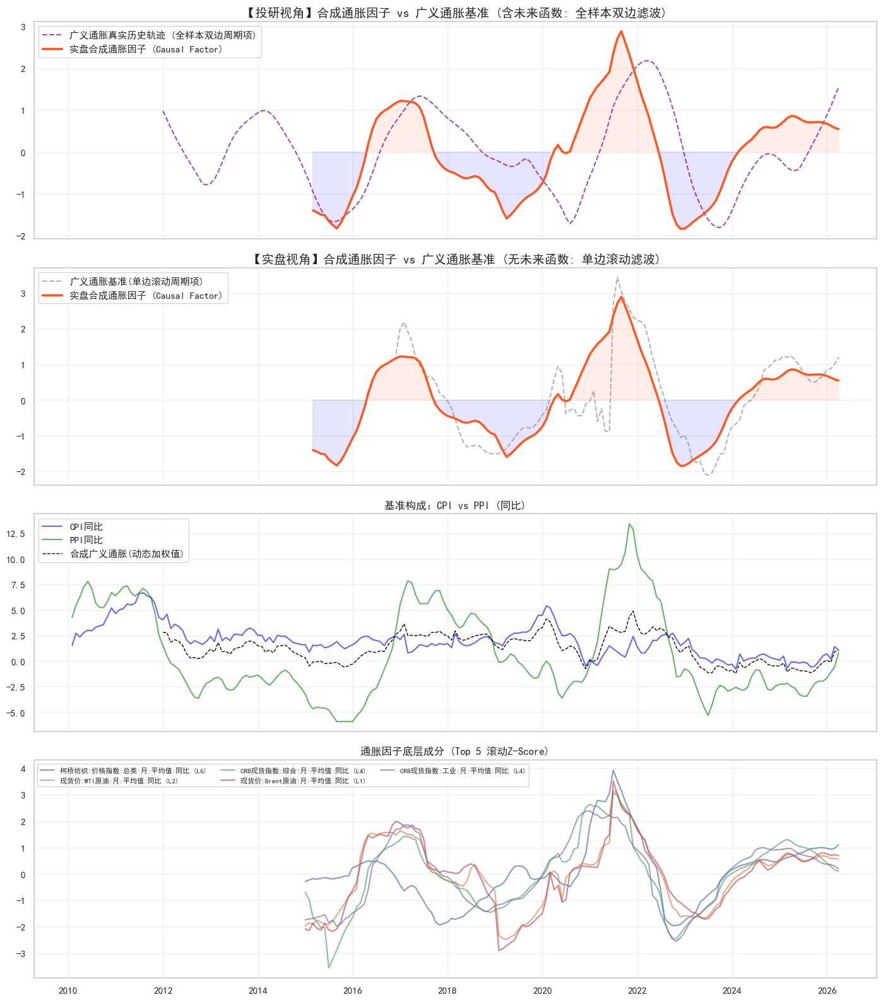
7. 通胀因子的投资含义 通胀因子大于 0，说明入选价格指标整体处于高于趋势的位置，通胀压力偏强。
通胀因子小于 0，说明入选价格指标整体处于低于趋势的位置，通胀压力偏弱。
通胀因子上行，通常意味着成本端、商品端或输入型价格压力正在增强。此时商品类资产的相对配置价值可能提升，而久期债券类资产可能面临一定压力。
通胀因子下行，通常意味着价格压力缓和。此时债券类资产的宏观环境相对改善，组合可更多关注利率下行和流动性改善带来的机会。
货币因子合成方法 1. 货币因子的定位 货币因子用于衡量资金价格和货币环境的松紧变化。与增长因子和通胀因子不同，货币因子不从多个指标中筛选合成，而是采用更加直接、透明的利率指标。
当前模型使用中国 1 年期国债收益率作为货币因子的核心基础变量。1 年期国债收益率处于短端利率区间，相比长期利率更容易受到银行间流动性、货币政策预期和短期资金价格变化的影响，因此适合作为货币条件变化的代理变量。
2. 货币因子的指标选择 模型会在原始利率数据中自动搜索同时包含“国债”和“1年”的指标，并排除美国国债、国开债以及利差类指标，最终锁定中国 1 年期国债收益率作为基础序列。
选择该指标的原因主要有三点。
第一，1 年期国债收益率具有较强的货币政策敏感性。短端利率通常更容易反映市场对资金面的预期变化。
第二，国债收益率由市场交易形成，具有较好的连续性和可观察性，能够及时反映资金价格变化。
第三，使用单一核心利率指标有利于提高模型透明度，投资者能够直观理解因子含义。
3. 货币因子的处理方法 在数据清洗阶段，模型会读取原始利率数据，删除元数据行，统一日期索引和数值格式，并对缺失值进行前值填充，以保证利率序列连续可用。
随后，模型对 1 年期国债收益率进行单边 HP 滤波，提取其相对于长期趋势的周期偏离。与增长和通胀因子不同，货币因子不进行 STL 分解，而是直接使用 HP 滤波处理利率序列。
完成单边 HP 滤波后，模型再对利率周期项进行 3 日滚动平均，以降低日频短期扰动，形成最终货币因子。
货币因子的合成路径可以概括为：
原始利率数据 → 数据清洗 → 锁定中国 1 年期国债收益率 → 前值填充缺失值 → 单边 HP 滤波提取利率周期项 → 3 日滚动平滑 → 货币因子。
合成效果如下：
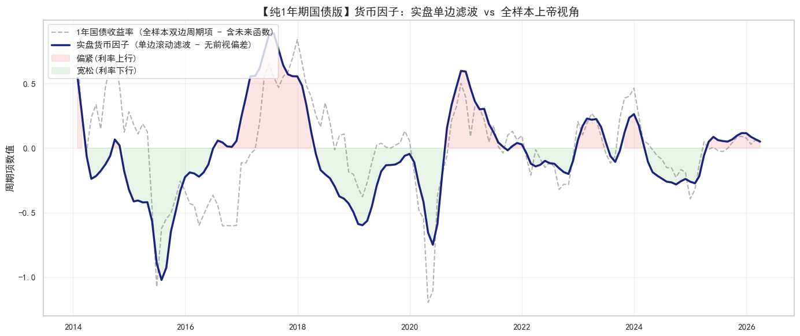
4. 货币因子的投资含义 货币因子的解释方向需要特别注意。
由于货币因子的基础变量是利率，因此因子大于 0 并不代表宽松，而是代表利率高于趋势水平，货币环境偏紧。
相反，货币因子小于 0 代表利率低于趋势水平，货币环境偏宽松。
也就是说：
o8psKO
货币因子状态 利率含义 货币环境 货币因子 > 0 短端利率高于趋势 偏紧 货币因子 ≤ 0 短端利率低于趋势 偏宽松
代码中也特别提示，导出的货币因子代表利率本身，应在回测引擎中确保 m <= 0 代表宽松，m > 0 代表紧缩。
从投资角度看，利率下降通常意味着资金成本下降、流动性改善，对债券、可转债和部分权益资产形成支持；利率上升则意味着资金成本上升、流动性趋紧，可能对高估值资产和久期类资产形成压力。
因子方向判定与平滑窗口选择 为什么因子合成后还需要判断“方向” 增长因子、通胀因子和货币因子完成合成后，模型得到的是三个连续型宏观时间序列。但在资产配置中，组合真正需要判断的并不是因子某一个时点的绝对数值，而是因子所代表的宏观变量正在上行还是下行。
原因在于，大类资产往往对宏观变量的边际变化更加敏感。例如，增长因子虽然仍处于负值区间，但如果已经连续回升，可能意味着经济正从衰退进入复苏；通胀因子即便仍处于高位，但如果开始回落，债券资产的压力可能已经边际缓解；货币因子虽然代表利率水平，但其方向变化能够反映资金环境正在转松还是转紧。
因此，在三因子合成完成后，模型进一步计算各因子的变化方向，并以此作为普林格周期状态划分的基础。
方向判定的基本方法：使用因子斜率而非原始水平 模型首先对三个宏观因子分别计算单月变化，即：
增长趋势 = 增长因子本月值 - 增长因子上月值
通胀趋势 = 通胀因子本月值 - 通胀因子上月值
货币趋势 = 货币因子本月值 - 货币因子上月值
这一步的含义是，将因子的“水平状态”转换为“边际方向”。如果变化值大于 0，说明该因子正在上行；如果变化值小于或等于 0，说明该因子正在下行或未明显改善。
在代码中，增长、通胀和货币因子分别通过 diff() 计算单月斜率，并进一步用于后续宏观状态判断。
这样处理后，模型判断的不再是“增长因子高不高”“通胀因子高不高”，而是“增长是否正在改善”“通胀是否正在升温”“货币环境是否正在收紧”。
信号可得性处理：增长与通胀滞后一个月，货币使用当月 在实际投资中，宏观数据存在发布时间滞后。增长类和通胀类数据通常不能在当月初即时获得，若直接使用当月增长或通胀信号进行当月配置，可能引入数据不可得问题。
因此，模型在方向判定中做了信号可得性调整：
增长因子方向使用滞后 1 个月的数据。
通胀因子方向使用滞后 1 个月的数据。
货币因子方向使用当月数据。
这样设定的原因是，增长和通胀数据大多来自宏观经济统计，发布存在一定滞后；而货币因子基于 1 年期国债收益率，属于市场化利率数据，可观察频率更高、可得性更强，因此可以使用当月信息。
对应到模型中，增长因子和通胀因子的单月斜率均进行了 shift(1) 处理，而货币因子斜率未进行同样滞后处理。
这一设计使得宏观状态判断更加贴近真实投资场景，避免因使用尚未发布的数据而造成未来函数。
方向信号的平滑：降低单月噪声干扰 单月因子斜率虽然能够反映边际变化，但也可能受到短期噪声影响。例如，某个月的宏观数据异常波动、商品价格短期冲击、利率单日扰动，都可能导致因子方向发生短暂反转。
如果模型直接使用单月斜率判断宏观状态，可能会导致组合频繁切换状态，进而产生不必要的调仓和交易成本。
因此，模型在得到单月斜率后，会进一步对增长、通胀、货币三个方向信号分别进行 Rolling 平滑。平滑后的信号用于最终判断宏观方向。
在最终方案中，模型统一采用 12 个月 Rolling 均值 对增长、通胀和货币三个方向信号进行平滑，即：
G = 增长因子单月斜率的 12 个月滚动均值
I = 通胀因子单月斜率的 12 个月滚动均值
M = 货币因子单月斜率的 12 个月滚动均值
代码中的主回测框架也采用了 rolling(12).mean() 来计算增长、通胀和货币三个方向变量，并基于平滑后的 G、I、M 划分普林格周期状态。
其逻辑可以概括为：
原始因子值 → 单月斜率 → 数据可得性调整 → 12 个月 Rolling 平滑 → 因子方向判定 → 普林格周期状态。
为什么需要研究 Rolling 窗口 Rolling 平滑窗口的选择会直接影响宏观状态判断。
如果窗口过短，信号会非常敏感，容易受到单月数据扰动影响，导致宏观状态频繁切换。
如果窗口过长，信号会更加稳定，但也可能对宏观拐点反应较慢。
因此，窗口选择需要在“过滤噪声”和“保留周期拐点”之间取得平衡。本模型并未简单追求某一组历史回测收益最高的参数，而是同时参考了两个维度：
第一，基于资产胜率的参数寻优结果。
第二，基于宏观因子自身周期结构的 ACF 与傅里叶频谱分析。
这种处理方式避免了单纯依赖历史净值曲线进行参数选择，使窗口设定更具可解释性。
基于资产胜率的窗口寻优 模型分别对增长因子、通胀因子和货币因子设置候选 Rolling 窗口，包括 1、3、6、9、12 个月，并遍历所有 G、I、M 窗口组合。
对于每一组参数，模型都会完成以下步骤：
第一，分别计算增长、通胀和货币方向信号的滚动均值。
第二，根据三因子方向组合判定普林格周期阶段。
第三，根据周期阶段映射下一季度应重仓的核心资产。
第四，将模型选择的资产与下一季度四类资产的真实收益排名进行比较。
第五，统计模型选中当季第 1 名资产、前 2 名资产和前 3 名资产的概率。
在评价标准上，模型重点关注三个胜率：
Top 1 胜率 ：模型选中的资产是否为下一季度表现最好的资产。
Top 2 胜率 ：模型选中的资产是否进入下一季度表现前两名。由于资产池共有四类资产，进入前两名意味着跑赢全市场平均水平。
Top 3 胜率 ：模型选中的资产是否进入下一季度表现前三名。该指标反映模型是否有效避开表现最差的资产。
代码中也明确将 Top 2 胜率作为主要排序依据，其次参考 Top 1 胜率。
参数寻优结果及其解释 根据当前回测输出，基于资产胜率的参数寻优结果如下：
1ElRNf
参数组合 Top 1 胜率 Top 2 胜率 Top 3 胜率 G6-I9-M3 39.00% 63.40% 78.00% G6-I12-M3 36.60% 63.40% 78.00% G1-I9-M3 34.10% 63.40% 78.00% G3-I12-M3 34.10% 63.40% 80.50% G12-I12-M12 34.10% 63.40% 80.50%
从纯胜率角度看，G6-I9-M3 组合在 Top 1 胜率上最高，达到 39.0%；而 G12-I12-M12 组合同样取得了 63.4% 的 Top 2 胜率和 80.5% 的 Top 3 胜率，说明统一 12 个月窗口在资产选择的稳定性上并不弱。
考虑到模型每期在四类资产中选择一类作为核心重仓资产，随机选中第一名的理论概率约为 25%，随机进入前两名的理论概率约为 50%，随机避开最后一名、进入前三名的理论概率约为 75%。
因此，无论是 G6-I9-M3，还是 G12-I12-M12，其胜率表现均高于随机水平，说明三因子方向体系具有一定的资产排序能力。
不过，最终模型并未机械选择 Top 1 胜率最高的 G6-I9-M3，而是选择 G12-I12-M12 。这一选择主要基于以下三点考虑：
第一，G12-I12-M12 的 Top 2 胜率同样达到 63.4%，与最优组合处于同一水平，说明其选中相对优势资产的能力并未明显下降。
第二，G12-I12-M12 的 Top 3 胜率达到 80.5%，高于 G6-I9-M3 的 78.0%，说明其在避免选中最差资产方面更加稳健。
第三，统一 12 个月窗口具有更强的逻辑一致性和投资者可解释性。宏观资产配置并不是高频择时，过短窗口虽然可能提高部分样本中的敏感性，但也更容易受到短期扰动影响。12 个月窗口能够更好地刻画宏观变量的中周期变化，更符合中长期资产配置框架。
因此，最终方案选择 G12-I12-M12 ，即增长、通胀和货币三个方向信号均采用 12 个月 Rolling 平滑。
内在周期测量：用 ACF 与傅里叶频谱验证窗口合理性 为了避免窗口选择完全依赖历史寻优结果，模型进一步使用数字信号分析方法，对三个宏观因子的内在周期特征进行测量。
本次分析采用两种方法：
第一，自相关分析，即 ACF。该方法观察因子序列在不同滞后月份下与自身的相关性。如果某个滞后期出现明显波峰，说明该因子可能存在对应长度的周期特征。
第二，傅里叶功率谱密度分析，即 PSD。该方法将时间序列从时域转换为频域，观察不同周期长度上信号能量的集中程度。如果某一周期附近能量最高，说明该周期可能是该因子的主要波动周期。
根据输出结果：
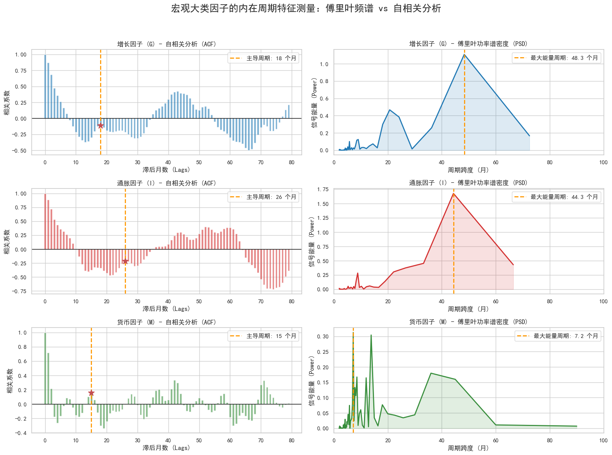
R26mRE
因子 ACF 测算周期 傅里叶测算周期 增长因子 18 个月 48.3 个月 通胀因子 26 个月 44.3 个月 货币因子 15 个月 7.2 个月
从图形结果看，增长因子和通胀因子在傅里叶频谱上均存在约 44 至 48 个月附近的中周期能量峰值，同时在 ACF 上也表现出约 18 至 26 个月的阶段性自相关特征。这说明增长和通胀变量并非单月噪声主导，而是具有较明显的中周期属性。
货币因子的傅里叶功率谱密度最高点出现在约 7.2 个月附近，说明短端利率确实存在较快的短周期波动；但从频谱图可以看到，货币因子在约 40 个月附近仍保持较高的功率密度。这意味着货币因子并非只有短周期特征，也存在中周期变化成分。
因此，若仅依据最高功率点选择货币窗口，M3 具有一定数学依据；但如果从宏观资产配置的角度出发，兼顾货币环境的中周期属性，M12 同样具备合理性。
为什么最终采用 12-12-12 窗口 最终模型采用 G12-I12-M12 ，并不是忽视参数寻优结果，而是在“理论参数”“周期结构”和“投资逻辑解释”之间进行综合权衡后的选择。
从理论参数看，增长因子的 ACF 周期约为 18 个月，通胀因子的 ACF 周期约为 26 个月，货币因子的 ACF 周期约为 15 个月。12 个月窗口虽然略长于主周期的 1/3，但仍处于能够反映中周期变化的合理区间。
从傅里叶频谱看，增长因子和通胀因子的最大能量周期分别约为 48.3 个月和 44.3 个月。12 个月窗口约为其主导中周期的 1/4，符合“平滑窗口可取主周期 1/4 至 1/3”的信号处理经验。
对于货币因子，虽然最大能量点位于 7.2 个月附近，但其在 40 个月附近仍存在较高功率密度，说明货币环境也存在较明显的中周期波动。12 个月窗口对应 40 个月周期的约 1/3，能够兼顾短端利率的周期平滑与宏观货币环境的中期趋势识别。
从投资逻辑看，宏观资产配置并不追求对每一次短期波动进行快速响应，而更强调稳定识别宏观环境的主导方向。统一使用 12 个月窗口，有利于减少因子间参数差异带来的解释复杂度，也更符合投资者对“年度维度宏观趋势”的理解。
因此，最终选择 12-12-12 作为三因子方向判定窗口，体现了以下取舍：
不追求单一历史样本下 Top 1 胜率最高，而是追求信号稳定性、逻辑一致性和中长期配置可解释性。
最终方向判定规则 综合资产胜率寻优和内在周期测量结果，模型最终采用以下方向判定规则：
rVyDSK
因子 原始方向计算 可得性处理 最终平滑窗口 最终方向含义 增长因子 G 增长因子单月差分 滞后 1 个月 12 个月 G > 0 表示增长改善，G ≤ 0 表示增长走弱 通胀因子 I 通胀因子单月差分 滞后 1 个月 12 个月 I > 0 表示通胀升温，I ≤ 0 表示通胀回落 货币因子 M 货币因子单月差分 使用当月 12 个月 M > 0 表示利率上行、货币收紧，M ≤ 0 表示利率下行、货币宽松
因此，因子方向判定并不是简单观察因子水平的正负，而是观察因子的边际变化趋势，并通过 12 个月 Rolling 平滑得到更稳定、更适合中长期资产配置的宏观方向信号。
小结 因子合成解决的是“如何得到增长、通胀、货币三个宏观信号”的问题，而因子方向判定解决的是“如何将连续因子转化为可用于资产配置的宏观状态”的问题。
本模型通过单月差分提取因子方向，通过数据滞后处理保证信号可得性，通过 12 个月 Rolling 平滑降低短期噪声，并进一步使用资产胜率寻优与 ACF/傅里叶周期分析验证窗口选择的合理性。
虽然纯胜率寻优结果中 G6-I9-M3 的 Top 1 胜率最高，但 G12-I12-M12 在 Top 2 和 Top 3 胜率上同样表现稳健，并且在宏观周期解释、信号稳定性和投资者理解层面更具优势。
因此，最终采用 12-12-12 作为三因子方向判定窗口。这一设定兼顾了数学分析结果和投资逻辑解释，使三因子框架更适合用于中长期宏观资产配置。
下面这部分可以直接作为报告新增章节，建议放在“方法优势与局限”之前，标题可设为：
Q＆A Q1：底层指标采用等权合成是否科学？是否应该相关性越高权重越高？ 答：等权合成是科学且稳健的，本模型最终采用“相关性筛选 + 等权合成”的方法，而不是简单按照相关性赋权。
在增长因子和通胀因子的构建中，模型已经先通过领先相关性检验筛选出与基准周期关系较强的指标。例如，增长因子以 PMI 周期项为基准，通胀因子以 CPI 和 PPI 动态加权形成的广义通胀基准为参照，分别筛选出相关性较高的候选指标。
因此，相关性在模型中已经发挥了“筛选有效指标”的作用。如果在最终合成阶段继续按照相关性赋予更高权重，就相当于将相关性重复使用两次：先用相关性选指标，再用相关性放大权重。这可能会使历史相关性较高的指标被过度强化，从而增加过拟合风险。
宏观指标还存在样本不长、相关性不稳定、指标之间共线性较强等问题。例如，能源价格、工业品价格和综合商品指数之间可能共同反映商品周期；工业生产、发电量和工程机械产量之间也可能共同反映实体需求变化。如果简单按相关性加权，可能导致某一类宏观信息在因子中被过度放大。
因此，本模型在完成领先相关性筛选和必要的同类指标去重后，对最终入选指标进行滚动标准化，并采用等权方式合成。该方法强调稳健性和广义代表性，使最终因子不依赖单一高相关指标，而是综合反映多个宏观维度的共同变化。
Q2：领先月数为 0 的指标是否应该被过滤？ 答：如果因子的目标只是刻画当前宏观状态，领先月数为 0 的指标可以作为同步确认信号保留；但在本模型中，因子合成的重要目的之一是降低宏观数据发布滞后带来的影响，因此最终合成应优先选择具有正领先期的指标。
领先月数为 0 表示该指标与基准周期在同月相关性最高，更多反映同步关系，而不是领先关系。对于增长因子和通胀因子而言，模型希望通过更高频、更市场化或更早反映产业链变化的指标，提前捕捉 PMI、CPI/PPI 等宏观数据的周期变化。因此，领先月数为 0 的指标虽然具有状态确认价值，但不应成为领先型宏观因子的主要构成。
在最终筛选中，模型优先选择同时满足“相关性较高”和“领先月数大于 0”的指标。若某些领先月数为 0 的指标具有极强经济含义或相关性显著高于其他候选指标，可以作为同步确认指标少量保留，但应设置数量约束，避免最终因子退化为同步确认指标。
因此，本模型对领先月数为 0 的指标采取“限制保留”而非“完全无约束纳入”的原则：优先使用领先指标，必要时少量保留同步指标作为稳定性补充。
Q3：猪肉价格对 CPI 影响很大，为什么最终通胀因子没有采用猪肉价格？ 答：合理。因为本模型构建的是“广义通胀因子”，不是单一 CPI 预测因子。
猪肉价格对 CPI 尤其是食品 CPI 的影响确实很大，在部分阶段会显著推高或拉低居民消费价格。但本模型的通胀因子并不是单纯预测 CPI，而是以 CPI 和 PPI 动态加权构建的广义通胀基准为参照，筛选能够解释整体价格周期的领先指标。
在这一框架下，最终入选的指标更多集中在能源、工业品、综合商品和部分农产品价格上，例如柯桥纺织价格指数、WTI 原油、CRB 综合、CRB 工业、CRB 食用油等。这些指标对 PPI、输入型通胀、成本端通胀和广义价格周期具有更强解释力。
猪肉价格则更偏向居民消费端食品价格，具有较强的供给周期和事件扰动特征。猪周期受能繁母猪存栏、养殖利润、疫病、收储政策、进口和季节性消费等因素影响较大。它对 CPI 食品项重要，但未必稳定代表整体通胀压力的共同趋势。
因此，未将猪肉价格纳入主通胀因子，并不意味着模型忽视猪肉价格的重要性，而是说明模型更关注广义价格压力和成本端通胀。猪肉价格可以作为消费端通胀风险的辅助观察变量，用于监控 CPI 结构性扰动，但不必强行进入主因子合成。
Q4：货币因子只使用 1 年期国债收益率是否合理？是否应该加入 10 年期国债收益率、准备金率等其他指标？ 答：使用 1 年期国债收益率是合理的，但需要明确其定位是“短端利率型货币因子”，而不是货币政策全景指数。
本模型中的货币因子使用中国 1 年期国债收益率作为基础变量，并通过单边 HP 滤波提取其相对于长期趋势的周期偏离。模型会在原始利率数据中自动搜索同时包含“国债”和“1年”的指标，并排除美国国债、国开债和利差类指标，最终锁定中国 1 年期国债收益率。
选择 1 年期国债收益率的主要原因在于，它位于利率曲线短端，相比 10 年期国债收益率更容易反映市场资金价格、银行间流动性预期和货币政策边际变化。其方向也较为清晰：利率上行代表资金价格抬升、货币环境边际收紧；利率下行代表资金价格下降、货币环境边际宽松。
10 年期国债收益率当然也重要，但它不完全是货币因子。长端利率同时受到增长预期、通胀预期、期限溢价、风险偏好和债券供需结构影响。如果直接将 10 年期国债收益率纳入货币因子，可能会与增长因子和通胀因子产生信息重叠。
准备金率、MLF 利率、LPR、DR007、社融、M2 等指标也都能够从不同角度反映货币环境。但其中部分指标存在发布频率较低、政策事件跳跃性强、数据连续性不足或与信用周期高度相关等问题。若全部纳入主因子，可能会增加模型复杂度和解释难度。
因此，当前主模型保留 1 年期国债收益率作为货币因子的核心变量，能够保持信号连续、方向清晰和实盘可跟踪。其他指标可以作为辅助观察变量，而不必直接混入当前主因子。
可转债资产研究报告 什么是可转债 可转债的定义 可转换公司债券（简称“可转债”），是由中国境内A股上市公司发行、兼具债性与股性双重属性的混合融资工具，本质上属于特殊的公司债券，同时附带投资者可将债券转换为发行方普通股的权利。
从债性来看，可转债具备普通信用债的核心特征：约定固定面值、票息率与到期日，发行公司需按契约约定定期支付利息（国内主流为半年付息一次），到期时全额偿还债券面值。国内可转债标准面值为100元人民币，主流期限为6年 ，区别于海外市场历史10年、当前5年的期限惯例。与普通债券一致，发行方若逾期违约、无法足额兑付利息或本金，将触发信用违约流程，因此可转债天然具备本金保护属性，这是债券类资产的核心安全底线。
从股性来看，可转债内嵌看涨期权 ，赋予投资者在转股期内，按发行时约定的转股价格，将债券面值全额转换为发行公司A股普通股的权利。这一转换权让可转债价格与正股（发行方普通股）价格紧密挂钩，正股上涨时，可转债价格会跟随抬升，投资者可通过转股或直接卖出可转债分享股价上涨收益；正股下跌时，可转债则依托债性形成价格支撑，跌幅通常小于正股。
作为兼具双重属性的工具，可转债的票息水平显著低于同发行主体、同期限的普通不可转换公司债，国内利差通常在200-400个基点，这是投资者为获取潜在转股收益所支付的“期权溢价”，也是可转债区别于纯债资产的关键特征。
公司发行可转债的原因 公司发行可转债有多种原因。可转债通常比可比不可转换债务提供更低票息，因此公司支付的利息较少。公司也可能偏好可转债，因为赎回特征提供了一种将债务转为权益的现成方式。对于需要资本来维持增长计划的公司，可转债提供了一种控制债务/权益比率的工具。随着股价上涨，可转债被赎回，债务转化为权益，从而改善资产负债表；之后公司可以再发行另一只可转债 ，以满足进一步资本需求。
宣布任何类型融资通常都可能导致股价下跌。不过，可转债发行公告对股价的影响通常小于其他融资方式，这也是公司考虑发行可转债的又一优势。此外，可转债融资常常可以缓解一次性向市场增加大量普通股供给所造成的负面影响。
可转债融资对成长型公司尤其有吸引力，因为这类公司通常资本需求旺盛。即便收入上升，许多成长型公司仍可能出现负现金流，因为支持销售增长所需的投资通常超过当前经营性净现金流。对这类公司来说，获得资本对于其股价至关重要。此外，发行人通常可以直接面向机构投资者迅速将可转债推向市场，这种去中介化相对于发行窗口更长的其他融资方式具有很强吸引力。
可转债的赎回条款 赎回条款（发行人权利） 赎回、下修与回售 是中国 A 股可转债的重要条款，构成了“上涨促转股、下跌可下修、长期低迷可回售 ”的条款体系。与美国市场相比，中国可转债更强调股价路径触发下的下修与回售机制 ；美国公开市场可转债则通常不采用中国式股价下跌触发型下修条款，也较少设置中国式正股低迷触发回售条款，但常见赎回保护、fundamental change put 以及 make-whole fundamental change 等安排。
赎回条款赋予发行人到期前按约定条件赎回债券的权利，是影响可转债价格的关键因素。中美赎回保护分硬保护 （固定期限内禁止赎回）与软保护 （仅特定股价条件下可赎回）：美国普遍设1-3年硬赎回保护，中国无硬保护，转股期（发行6个月后）前形成实质赎回限制 。
中国可转债赎回核心为有条件强赎 ：转股期内，正股连续30个交易日中至少15个交易日收盘价≥ 当期转股价的130%，发行人有权按面值+当期应计利息 赎回未转股债券。其核心目的是倒逼投资者转股
以兴业银行发行的可转债为例：
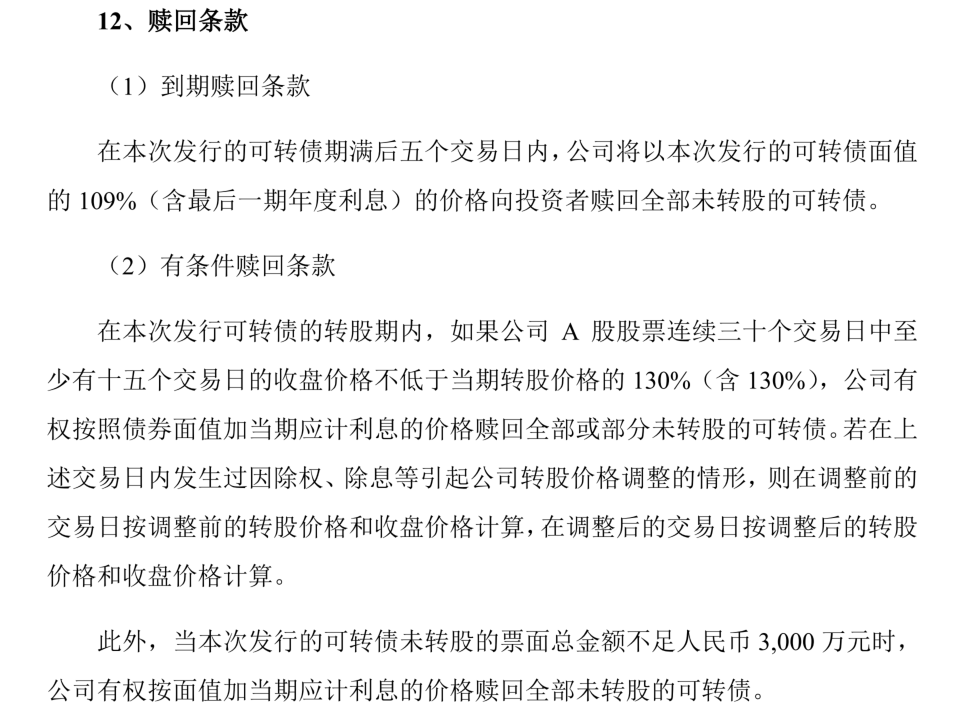
美国软赎回触发门槛更高（正股≥转股价140%-150%），常附带make-whole补偿 （剩余票息现值等）；中国无此补偿，赎回价固定，投资者未及时转股或卖出将面临损失。此外，中国发行人触发强赎需及时披露，且决定不行使赎回权后，短期内不得再次行使赎回权。
转股价格向下修正条款（下修，投资者保护） 下修条款是中国 A 股可转债非常典型、普遍的特色条款。相较之下，美国公开市场可转债通常不设置中国式的股价持续低于转股价 后由发行人推动下修的机制。
常见触发条件：任意连续30个交易日中，至少15个交易日收盘价≤当期转股价的80%-85% 。下修需经股东大会2/3以上表决权通过（可转债股东回避），且修正后转股价不得低于股东大会召开日前20日与前1日正股均价，避免过度稀释股权。
核心作用：发行人规避到期还本压力，投资者获得期权价值保护；美国可转债通常无下修条款，正股下跌时投资者无额外兜底机制。
以兴业银行发行的可转债为例：
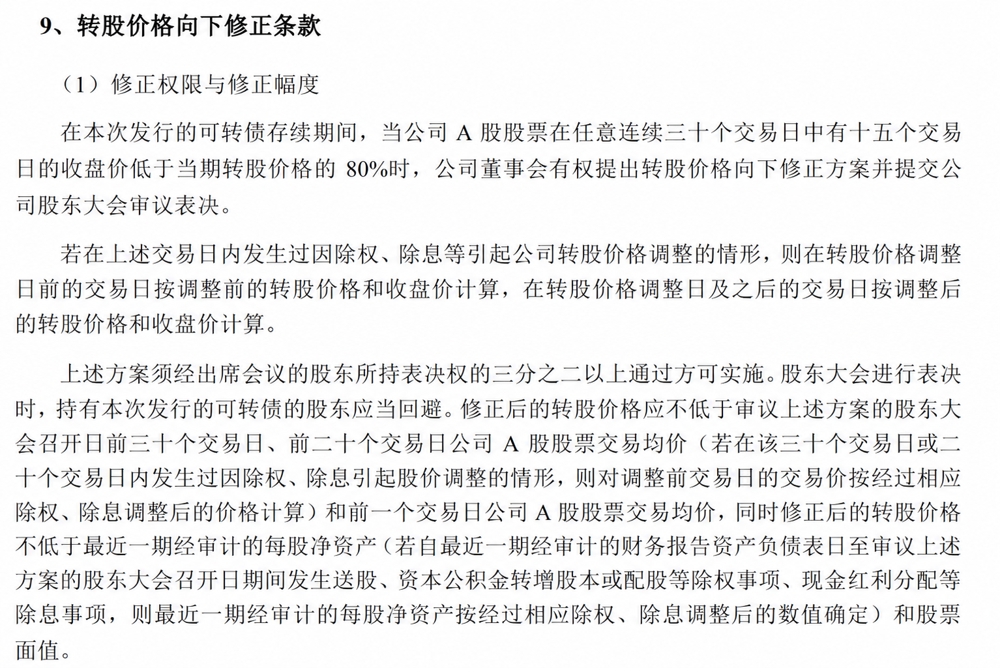
回售条款（投资者权利） 回售条款是投资者的“退出权”，正股长期低迷时，可按约定价格将可转债回售给发行人，构成债底保护。
中国回售分两类：一是有条件回售 ，存续期最后2年，正股连续30个交易日收盘价≤转股价70%-80%，投资者可按面值+应计利息回售；二是附加回售 ，发行人变更募资用途时，投资者可额外行使一次回售权 。
但不是所有可转债都有有条件回售条款，以兴业银行为例，只有附加回售条款：
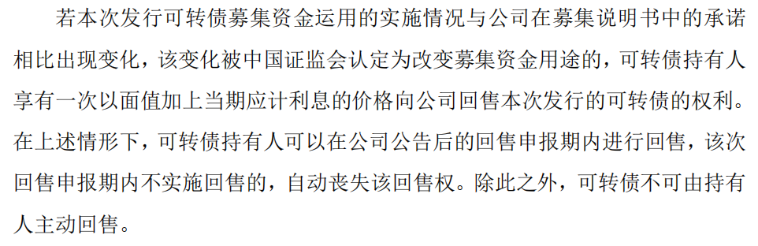
而有条件回售与下修高度联动：正股下跌触发回售压力时，发行人常推动下修转股价，提升转股价值、缓解兑付压力，形成“下跌→回售压力→下修→支撑债价 ”的传导逻辑。
中美条款核心差异与总结 中国可转债通过赎回、下修和回售形成较完整的条款博弈体系：赎回偏向发行人权利，下修由发行人主导但可能保护转股价值，回售则体现投资者退出权。
美国可转债侧重发行人权利，无下修、回售，依赖硬赎回保护与make-whole补偿，条款设计更灵活但投资者保护较弱。
可转债的反稀释保护 反稀释条款通过允许在特定情形下上调或下调转换比例 来保护可转换证券持有人。历史上，可转债通常通过按股票股利比例调整转换比例来防范拆股导致的稀释 。如果某只可转债在二拆一之前转换比例为每张债券 30 股，拆股后转换比例将变为每张债券 60 股。股票收购情形下，可转债持有人长期以来也获得反稀释保护，只是程度不一。
在美国市场，近几十年来，反稀释保护有所加强。虽然可转债持有人长期受到股票拆分和股票收购所致稀释的保护 ，但直到相对近期，他们才开始受到现金股息 或现金收购所致稀释的保护 。这些增强保护很大程度上由一家公司推动。2003 年，一家赌场 公司在发行可转债后不久发放现金股息，由此造成的稀释激怒了持有该可转债的套利投资者。此后，市场参与者基本迫使承销商在现金股息情形下加入保护。股息保护在发行人发行可转债后提高或开始支付股息时保护债券持有人。若发生这种情况，发行人会提高转换比例以抵消股息增加 ，之后任何更高水平的股息也会按此调整。
一年后，同一家赌场公司被现金收购 ，可转债持有人再次没有受到保护。为避免类似情况再发生，投资者开始要求在现金收购情形下也提供反稀释保护。现金收购保护的核心是补偿投资者本应遭受的经济损失。每只可转债都有一个矩阵，也称 make-whole 表（见下表）。如果可转债发行人被现金收购，可转债持有人可以转换，并根据矩阵在原有转换比例之外获得额外股份。其目的在于抵消可转债内嵌看涨期权时间价值的损失。该矩阵也常用于某些债券软性赎回保护的 make-whole 补偿。
这些变化显著增强了债券持有人保护。在其他条件相同的情况下，今天发行的可转债比 2003 年以前发行的可转债更有价值。
假设可转债发行的 make-whole 矩阵：每 1,000 美元本金票据在不同股价和生效日期下转换比例增加的额外股份数
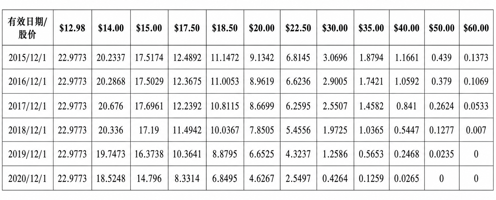
中国可转债市场的反稀释条款安排与美国市场存在一些区别。在股票拆分、送股等情形下，中国可转债同样会按照对应比例调整转换比例，以防范股权稀释，这一机制与美国市场基本一致。对于现金股息发放，中国可转债设有标准化的强制保护规则，发行人派发每股现金红利时，将相应下调转股价格 ，等效于提高转换比例，以此对冲现金分红带来的稀释影响，该条款为境内可转债普遍适用的常规安排 。
而在现金收购场景 中，中国可转债并无美国市场标配的 make-whole 补偿机制，不存在专门的补偿矩阵，当发行人遭遇现金收购时，可转债持有人仅能按照约定的常规转股价格进行转换，无法获得额外股份补偿，也没有针对可转债内嵌看涨期权时间价值损失的相关补偿设计，这是中美可转债反稀释保护体系的关键差异。
可转债的常见概念 投资价值（纯债价值） 可转债的投资价值是其作为债券的价值，即可转债的固定收益组成部分。需要注意，投资价值只指可转债估值的这一方面，并不等同于可转换证券的市场价值。从概念上讲，它是不含转换特征的债券价值。投资价值按照标准固定收益分析确定，即假设该债券不可转换时应具有的价值，考虑因素包括公司基本面、债券类型（有抵押或无抵押债券）、票息和到期日、偿债基金要求、赎回条款以及到期收益率。普通债券的市场价值会随这些因素变化而波动。不过，由于可转债的投资价值内嵌在总市场价值中，是总价值的一部分，固定收益决定因素的变化不一定会直接影响可转债市场价格。
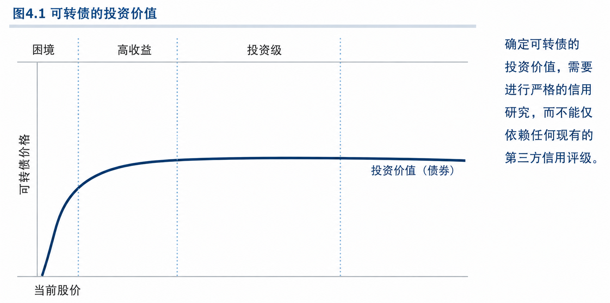
以上图像用水平线形式展示了普通股价格与债券投资价值之间的关系。纵轴为可转债价值，横轴为股票价格，变量变化的影响可以清楚呈现。为简化起见，如果假设利率稳定，债券投资价值会在很大股票价格范围内保持稳定。公司的财务稳定性和多数其他债券质量因素变化缓慢，甚至不变。因此，在较短时期内投资价值通常保持不变，在图中表现为水平线。普通股价值上升不会影响债券价值，尽管可转债市场价格会受到影响 。若信用状况恶化，股价开始向零下沉，显而易见的可能原因是公司财务基本面异常恶化，使全额本金回收前景受到质疑。此时，可转债价值也必须接近其破产价值。
如果某只股票因整体负面市场情绪而下跌，尤其在短期内不应影响投资价值。只要发行人信用状况未变，投资价值会继续在可转债市场价格下方提供投资底线，可转债不应跌破其投资价值。这构成了可转债中的基本安全要素。此外，转换特征应确保可转换证券始终比收益相当的不可转换债券更有价值。
然而，也有若干因素会影响可转换证券的投资价值。如果普通股因公司因素（非系统性风险）、盈利不佳或其他原因下跌，债券投资价值也会受到影响，类似于普通债券价值受到评级下调影响。事实上，公司基本面恶化应导致评级下调。由这些因素造成的股价下跌也会使投资价值下降，反映公司可能无法支付票息或本金。极端情况下，公司价值和债券投资价值都将趋近于零。研究表明，公司基本面的剧烈变化会立即影响债券投资价值。在评估可转债时忽视这些基本面的投资者将在市场上处于明显劣势。评级机构可以提供帮助，但其反应未必足够及时。
在进行可转换证券数学分析时，为方便起见，可以假设短期投资价值稳定，并假设股票价格波动源于一般市场情绪。长期来看，投资价值会波动，而且无论普通股如何变化，到债券到期时投资价值必须升至面值。利率当然也会像影响普通债券一样影响可转债投资价值。利率上升时，投资价值下降；利率下降时，投资价值上升。投资价值与同等质量普通公司债价格同步波动。
但由于可转债的独特性质，投资价值变化未必意味着市场价格也会变化。投资价值可能波动，但可转债市场价格可能相对稳定，因为利率变化只是任一时点影响市场价格的众多因素之一。接近投资价值交易的债券，会比接近转换价值并明显高于投资价值交易的债券更容易受到利率变化影响。如果正股在利率上升时也上涨，可转债将由其权益部分而非固定收益部分驱动，并可能升值。
需要认识到，可转债发行时的投资价值很少接近面值。可转债不是按其票息率折现，而必须按适用于发行人不可转换债务的利率折现。例如，如果公司发行了一只票息为 2% 的可转债，而其不可转换债务收益率为 5%，那么该可转债应按 5% 折现。对于一只五年期、面值 1,000 美元的债券，其投资价值为 868.72 美元。
正确估算投资底线在评估可转债时极其重要；它构成可转债不应跌破的最低价值，不受普通股波动影响，并影响所有其他可转债数学分析。由于投资价值是一切其他计算的枢纽，理解各种因素如何影响它十分重要。
投资溢价（ 纯债溢价率 ） 可转债的投资溢价是可转债市场价格与其 投资价值（纯债价值） 之间的差额 ，以百分比表示。衡量可转债基本价值的一个重要指标就是其高于投资价值的溢价。它指可转债市场价格与投资价值之间差额占投资价值的比例。这个数值很重要，因为它表明下行风险水平，并可以随市场价格变化持续监控。例如，一只市值 1,000 美元、投资价值为 868.72 美元的债券，其投资溢价为（1,000 - 868.72）/ 868.72 = 15.1%。
投资溢价越高，可转债市场价格对标的普通股下跌越敏感 。市场价格相对于投资价值较高，是因为正股价值上涨使可转债市场价值依赖股票价值。此时下行保护较少，因为股票必须大幅下跌，可转债市场价格才会接近投资价值并获得保护。相反，当投资溢价较小时，正股小幅下跌就会使市场价格接近投资价值，此时投资价值底线会提供下行保护。此外，当投资溢价较小时，可转债更具利率敏感性而非权益敏感性 ，通常更容易受到市场利率变化影响。Delta 是衡量可转换证券对其正股敏感性的指标，Delta 越高，权益敏感性越强。
转股价格和转换比例 可转债的转股价格，是债券按面值转换为股票时的有效价格。发行时，招股说明书会列示债券面值对应的普通股价格。该价格进而决定每张面值债券可以转换为多少股股票；这就是转换比例。
美国投资者常常困惑于：转股价格写在债券文件中，而转换比例通常没有直接写出，必须计算。转股价格只有在债券按面值计算时才有意义，转换比例可由面值除以转股价格得出。例如，如果普通股转换价格为 50 美元，那么每张可转债代表 20 股股票（1,000 美元面值除以 50 美元转股价格 = 20）。投资者常常关注转股价格，但实际上更应关注转换比例。从债券上市那一刻起，它会根据市场力量高于或低于面值交易。由于无论债券是否按面值交易，转换比例都保持不变，因此转换比例对投资者更重要。
转换比例决定可转债持有人在将债券转换为股票时可获得的普通股数量。转换比例在证券发行时确定，并通常受到反稀释保护。它可能包含零碎股份，例如 21.3 股。转换比例通常会因拆股和股票股利而调整。在前述例子中，初始转换比例为每张可转债 20 股。若发生 10% 股票股利，转换比例将调整为 22 股。2003 年以前，可转债持有人很少受到普通现金股息保护；如今，他们通常受到普通现金股息、特别股息和分拆的保护。
公式：转换比例 = 面值 / 转股价格。
在中国市场，情况大同小异，以兴业银行发行的可转债为例：
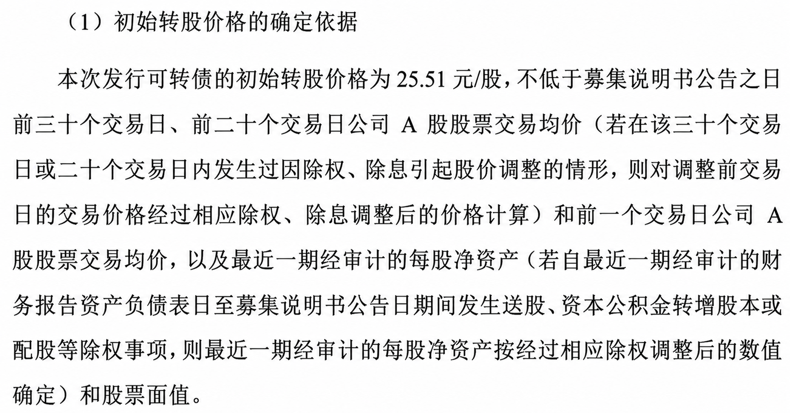
以兴业银行A股可转换公司债券为例，其募集说明书规定，本次可转债每张面值为100元，按面值发行，初始转股价格为25.51元/股。该初始转股价格的确定受到多重约束：不得低于募集说明书公告日前30个交易日、前20个交易日公司A股股票交易均价及前一交易日交易均价，同时不得低于最近一期经审计的每股净资产和股票面值。这体现出中国可转债初始转股价格通常具有明确的监管约束和发行定价边界。
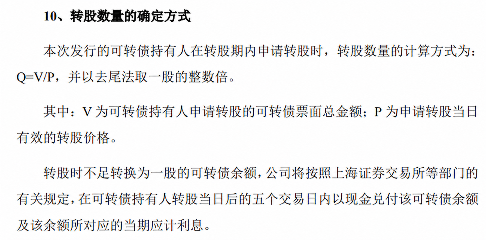
按照“转换比例 = 面值 / 转股价格 ”的逻辑，兴业银行单张100元面值可转债对应的理论转换比例约为100 / 25.51 = 3.92股。若投资者持有1手，即10张、合计1000元面值，则理论可转换股数为1000 / 25.51 = 39.20股。根据募集说明书的规定，实际转股数量按照Q = V / P计算，并以去尾法取一股的整数倍，因此实际可转为39股，不足转换为1股的可转债余额由公司以现金兑付。由此可见，中国市场的可转债文件中通常不直接列示“转换比例”，而是通过“转股价格”和“转股数量计算公式”共同确定投资者最终可获得的股票数量。
转换价值 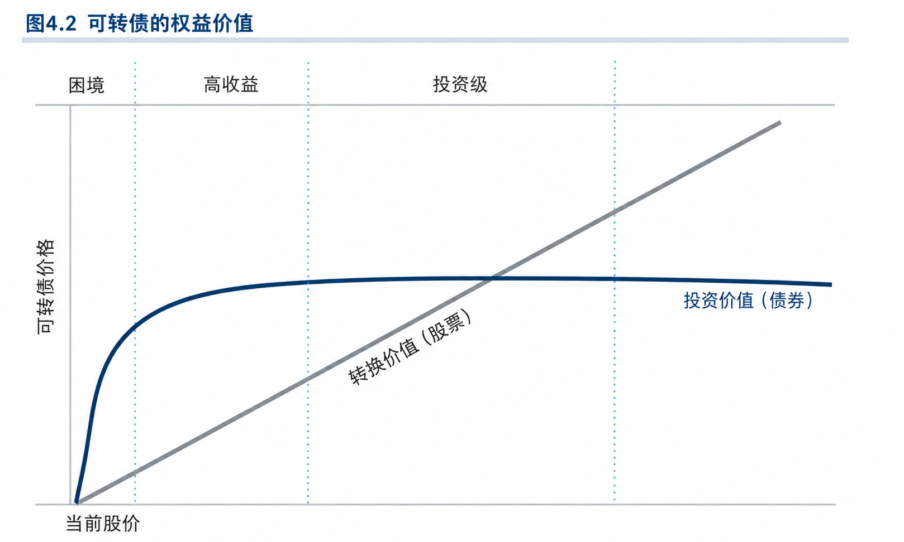
转换价值代表可转债的权益部分。它是可转债按当前市场价格转换为普通股时的价值。在图 4.2 中，对角线表示转换价值。对于任何股价，转换价值都等于该股价乘以每张债券可获得的普通股数量。例如，如果一只债券可以转换为 20 股股票，而股票当前价格为每股 42 美元，那么该可转债的转换价值为 840 美元。每张债券可转换股数即转换比例，在发行时设定。
与债券投资价值一样，转换价值也是该证券预期出售价格的最低价值或最低价格。如果市场价格低于转换价值，专业交易商和做市商会迅速套利：套利者买入债券，并同时卖空等量标的普通股。两个价值之间的差额构成套利者的无风险利润。因此，转换价值与投资价值 （纯债价值） 一样，成为可转债市场价格不应跌破的最低价值 。确定转换价值的关键在于权益分析。
平价：把一张面值 100 元的可转债，当场全部转成对应的正股股票，现在能卖出值多少钱
转股溢价 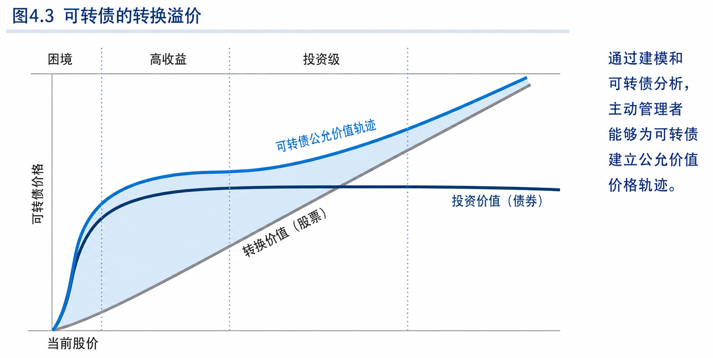
既然可转债的权益价值被确定为转换价值，转股溢价就可以很容易计算：它是可转债当前市场价格与转换价值之间的差额，以百分比表示 。由于可转债比普通股更安全，且通常支付的利息高于股票股息，可转债买方愿意为其支付高于转换价值的溢价。市场力量决定具体可转债在市场上能够获得多大溢价。
当可转债价格上升并高于其投资价值时，其固定收益属性会让位于权益属性，转股溢价会下降。另一方面，如果股价下跌，可转债价格会接近其固定收益价值，转股溢价会上升。接近固定收益价值交易、转股溢价较高的可转债被称为“busted converts”（破损可转债）。其权益部分价值很低，主要按照固定收益特征交易。
图 4.3 描绘了典型可转债价格曲线，阴影区域代表转股溢价 。可以看到，随着股票价值上升，转股溢价逐步下降，直到变为零 。此时，可转债市场价格与转换价值相等。随着普通股价值下降，可转债因接近投资价值而获得转股溢价。通过建模和可转债分析，主动管理人建立可转债的公允价值价格轨迹。
从另一角度看，可转债市场价值应始终高于转换价值或投资价值。如果假设某只可转债市场价值恰好等于其投资价值，则投资溢价为零，该可转债将像一只普通不可转换债券一样交易。然而，可转换证券具有隐含期权，只要期权到期前仍有时间，从而赋予持有人权益潜力，该期权本身就具有价值。
可转债价格曲线既可以估计某只可转换证券在不同股价下可能获得的转股溢价，也可以历史性描绘普通股随时间波动时可转债实际交易情况。它是评估可转换证券极为重要的考虑因素，因为它决定上行潜力与下行风险。要准确估计可转债价格曲线，需要详细的数学公式 。仅依赖简单历史价格关系来分析转股溢价水平是否公平是不充分的。
转换价值和投资价值的关系 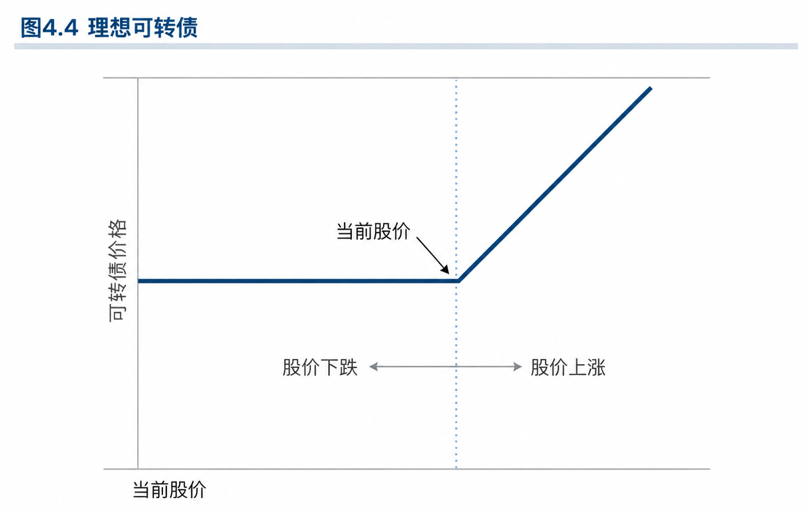
为了说明转换价值与可转债投资价值 的关系，我们暂时忽略许多现实市场因素。图 4.4 展示了股价变动（横轴）对可转债市场价格（纵轴）的影响。箭头表示该可转债的理想买入价格。在这一价格上，如果股票升值，可转债价值将以相同比例上升；另一方面，如果普通股价值下跌，可转债将受到投资价值支撑，并保持其市场价值。
在这个简化例子中，当可转债以理想点定价时，它显然是优越的买入对象，因为它提供与普通股相同的上行潜力，却没有下行风险。当然，现实世界不会给投资者如此容易的获利机会。在金融市场中，债券投资价值的安全性与转换价值的机会之间存在权衡。投资者愿意为这种权衡支付多少，形成高于转换价值和高于投资价值的溢价，这也是可转债投资中最复杂的方面。衡量这种价值的指标就是可转换证券的转股溢价。
持有可转债有两个基本情景。第一，如果公司股票表现良好，可转债升值，而且作为债券也可以大幅升值，而无需真正转换为股票。许多刚接触可转债的投资者并未意识到，要实现利润并不需要转换为标的普通股。可转债市场价格会随股价变化而变化，债券可以随时出售。股票价值上升会反映在可转债市场价格中。当然，债券持有人也有权将债券转换为股票，但这并非必要；转换只有在持有人要求时才会发生。
第二，如果股票表现不佳，债券持有人保留债券并收取票息（几乎总是高于股票股息），到期时收回面值。当股票持平或下跌时，债券持有人仍保留债券投资价值，这构成证券的底线价值。理论上，在不利权益市场中，由于存在投资价值，可转债价格下跌幅度不应像正股那样大。此外，如果利率上升，转换特征也在一定程度上保护债券本金。
虽然原理简单，可转债管理却很复杂。可转债具有股票和债券双重属性，这正是其难以分析的原因之一，评估过程必须同时考虑两个部分。不过，这种双重属性也正是其作为投资品的吸引力所在。
投资者可以计算可转换证券的债券部分价值和权益部分价值，但这仍未说明全部问题。估值的最后一环可能也是最难的：给证券本身定价。投资者必须确定债券理论公允价值或正常预期价格，即市场上公允定价的价值，同时考虑债券价值、权益价值、赎回条款、波动率和利率期限结构。然后将该理论公允价值与市场价格比较，以确定获利机会和市场优势。可转债相对于股票可能被高估或低估。
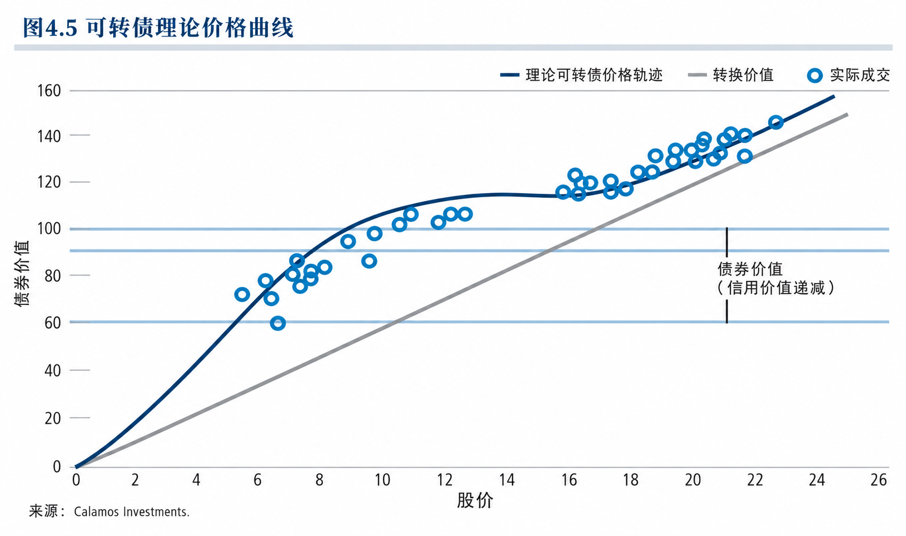
图 4.5 展示了一只可转债实际价格的历史，并叠加了理论可转债价格轨迹。随着股票价值下降，投资价值也因信用恶化而下降。这表明信用分析和基本面分析的重要性。投资者还必须评估在不同市场情景下债券会涨跌多少。单只证券的风险收益特征取决于其相对于权益价值和债券价值的位置，这进而决定该证券及其所在投资组合的表现。
正确选择可转债需要审慎分析，简单经验规则很可能导致令人失望的表现。例如，“只在转股溢价低于 20% 时买入可转债”，或“只在盈亏平衡时间少于三年时买入”。此外，在某一利率环境下成立的情景，在另一利率环境下可能失效。例如，20 世纪 70 年代的收益率曲线和 2015 年的收益率曲线对可转债估值会产生截然不同的影响。
国外市场 可转债历史上相对于股票和公司债的表现 可转债一直参与了相当部分权益上行，同时以标准差衡量的风险较低。它们也跑赢了公司债。图 5.1 和图 5.2 展示了美国过去 10 年和 25 年期间可转债相对于股票和债券的表现。在这些时期，可转债表现出显著上行能力和下行韧性。此外，在某些滚动五年期间（图 5.3），可转债以较低标准差跑赢股票。
图 5.1 资产类别相对表现与风险摘要（2005-2015）
资产类别 年化收益 标准差 可转债 6.68% 12.63% 股票 7.31% 15.06% 长期公司债 6.18% 10.45% 中期公司债 4.99% 4.72%
图 5.2 资产类别相对表现与风险摘要（1990-2015）
资产类别 年化收益 标准差 可转债 9.11% 12.01% 股票 9.62% 14.54% 长期公司债 7.92% 8.61% 中期公司债 6.59% 4.22%
图 5.3 五年区间风险与收益（1991-2015）
期间 可转债收益/标准差 股票收益/标准差 长期公司债收益/标准差 中期公司债收益/标准差 1991-1995 17.35% / 7.78% 16.59% / 10.10% 12.63% / 6.35% 10.19% / 4.03% 1996-2000 13.65% / 14.84% 18.32% / 16.08% 5.29% / 6.34% 5.95% / 3.38% 2001-2005 4.22% / 10.63% 0.54% / 14.94% 9.21% / 8.84% 6.45% / 4.19% 2006-2010 5.71% / 15.42% 2.29% / 17.82% 6.07% / 12.36% 6.07% / 6.01% 2011-2015 7.65% / 9.17% 12.57% / 11.70% 6.29% / 8.22% 3.93% / 2.94%
危机＆扩张时期可转债的表现 过去30年，可转债在市场下行期相较股票表现出持续的相对优势。这来自其债底提供的内在价值保护，同时仍能参与潜在股票修复。对1994-2025年长期总回报的分析显示，可转债和股票之间既有相似之处，也有显著差异。报告用MSCI全球所有国家指数代表股票，所有数值以欧元计价。可转债在市场下行期往往表现更强。报告识别了五次重大经济冲击：互联网泡沫危机、全球金融危机、2020年疫情冲击、2022年俄乌战争和通胀上升，以及2025年4月“解放日”。显然，股价大幅波动对可转债表现的影响较小。
在稳定债底保护下（灰线代表JPM全球投资级债券指数），可转债只承担股票回撤的一部分。“解放日”冲击最能说明这一点：股票下跌12%，而可转债仅下跌3%。这一回报相当于30%股票和70%债券的组合，正好反转了其长期平均70%股票收益参与率。过去危机也呈现类似模式；只有2008年金融危机中，可转债回报特征与长期平均相符，承担了约70%的股票下跌。该时期出现大规模避险，即便可转债也低于公允价值交易，此后未再观察到类似情况。金融危机后至疫情前，市场情绪发生变化，可转债相对股票的累计落后达到243个百分点（见图5）。
下图中展示了Refinitiv全球欧元对冲可转债指数、MSCI AC World欧元指数和JPM全球投资级欧元对冲债券指数自1994年以来的表现，并标注经济危机阶段。
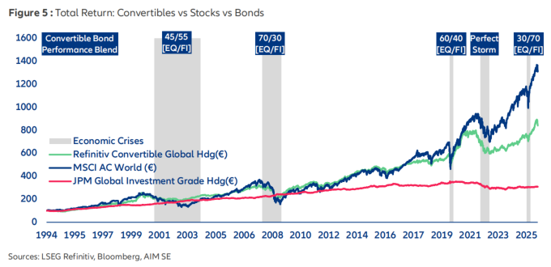
危机和扩张期间主要资产类别历史表现如下：
类别 时期/事件 可转债 股票 债券 危机 2000-2003 互联网泡沫危机 -12% -58% 24% 危机 2007-2009 全球金融危机 -33% -53% 12% 危机 2020 疫情冲击 -20% -33% 2% 危机 2022 俄乌战争/通胀与加息 -19% -15% -10% 危机 2025 解放日 -3% -11% 0% 扩张 2004-2007 金发姑娘经济 60% 114% 13% 扩张 2010-2020 低利率时代 179% 422% 40% 扩张 2021 疫情后再通胀 72% 61% -1%
可转债也可能同时跑输股票和债券。如表所示，当风险偏好骤降而利率同时跳升时，可转债会面临挑战。2022年就是典型“完美风暴”：俄乌战争、通胀和政策加息共同触发调整，冲击债底并显著削弱保护功能。在此之前，2020和2021年可转债大幅上涨，甚至一度跑赢股票（+72%对+61%）。
可转债因子暴露的Fama-French分析:
因子 系数 标准误 t统计量 P值 截距 -0.24 0.10 -2.44 1.51% 市场风险溢价 1.03 0.02 41.8 0.00% 小盘减大盘（SMB） 0.16 0.04 4.42 0.00% 高账面市值比减低账面市值比（HML） -0.06 0.04 -1.54 12.36% 稳健减弱势（RMW） -0.25 0.04 -5.65 0.00% 保守减激进（CMA） -0.03 0.06 -0.54 59.17% 动量 -0.06 0.02 -2.82 0.51%
因子分析显示，可转债的股票部分集中于规模较小、盈利能力较弱的公司，这些公司在紧缩环境中承压，且在2022和2023年缺乏大型科技股动能。为理解这一时期表现，需要考察Refinitiv全球宽基可转债指数的基础股票（Equity Parity Index）及其因子暴露。一个简单的Fama-French五因子加动量回归揭示了若干特征：其股票篮子市场Beta略高于1，表示对整体市场走势敏感性较高；对SMB因子为正，说明偏向小盘股；最值得注意的是，对RMW因子为负，说明基础股票主要为规模较小、成熟度较低、盈利能力尚弱的公司。这类股票在宽松金融条件下往往大幅上涨，但市场情绪转变时也更容易出现严重回撤。
2022年可转债跑输全球股票（MSCI ACWI），是因为其基础股票部分回吐了2020-2021年涨幅，同时债底崩塌进一步冲击表现。因子暴露也解释了其在随后牛市（2023年中至2024年）中偏离市场的原因：相对落后主要源于缺乏对“七巨头”的暴露。
注：七巨头（Magnificent Seven）——苹果 Apple（AAPL）、微软 Microsoft（MSFT）、英伟达 Nvidia（NVDA）、谷歌母公司 Alphabet（GOOGL）、亚马逊 Amazon（AMZN）、Meta（原 Facebook，META）、特斯拉 Tesla（TSLA）
美国可转债市场未来情况的可能性 如果AI驱动的大型科技股主导地位消退、宏观环境趋于稳定，可转债可能受益于被低估的小盘股暴露，并获得跑赢机会。可转债前景与股票和信用市场紧密相关。如果超大型股票引领上涨，可转债可能因股票敏感性较低而落后；相反，可转债基础股票中的小盘暴露未来可能跑赢大盘。当前小盘股相对大盘股存在显著折价，尤其体现在市净率（P/B）方面。美国小盘股相对大盘股的市净率比值低于0.4，意味着其估值便宜约60%（见图10）。
自2024年以来，超大型科技股贡献了大盘股长期每股收益增长预期的大部分，而小盘股预期更谨慎。小盘股长期EPS增长处于较温和水平，低于大盘股，尤其低于疫情后时期（2021-2023年）。考虑到AI推动的大盘股增长预期显著抬升，小盘股当前预期可被视为更现实、更审慎。总体而言，如果大盘股失去主导地位，小盘股可能重新获得增长溢价，从而带来更强收益。历史上，在经济稳定阶段，小盘股曾跑赢大盘股，例如互联网泡沫后的2004-2006年，以及金融危机后的2009-2011年。如果当前不确定的宏观环境正常化，小盘股最终可能受益并再次跑赢。
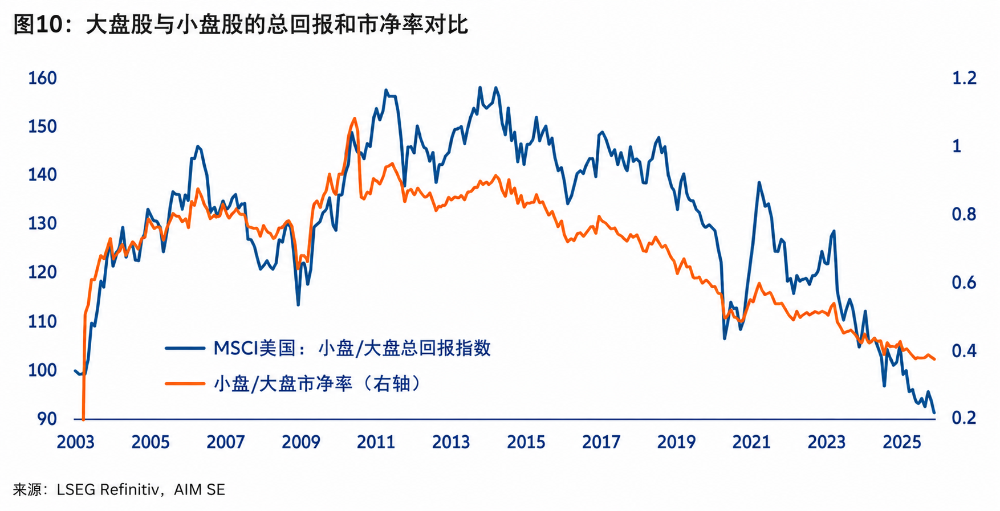
大盘股和小盘股的长期 EPS 增长预期在不同时期会变化，而橙色线显示市场给小盘股相对大盘股的估值溢价/折价也随之变化。近年来，即使小盘股盈利增长预期没有彻底崩塌，但市场给予小盘股的远期市盈率相对大盘股已经明显下降。
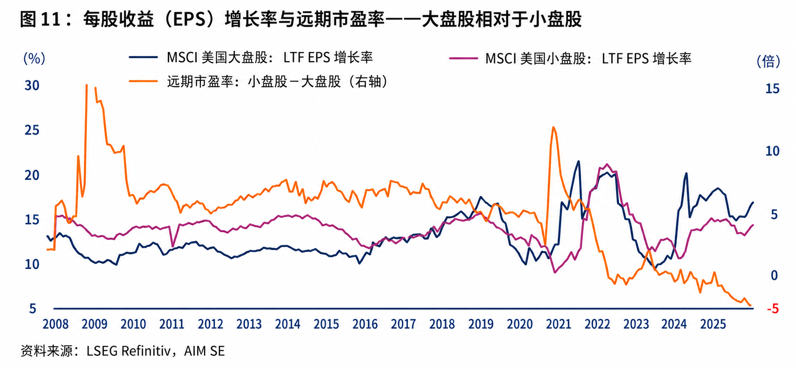
对投资者的启示 可转债能拓展有效前沿
可转债能够增强多资产组合的分散化，在追求目标收益的同时降低风险。这类工具位于股票和固定收益之间，有助于在两类资产之间实现更平滑的过渡。由于可转债能够通过凸性行为适应市场波动，它们可以改变自身收益特征，为组合收益构成引入新的维度。这一动态结合了股票和债券属性，并扩展了有效前沿。有效前沿代表在特定风险水平下能够提供最高预期收益的一组最优投资组合。
图16展示了1999年3月至2025年8月两个组合的有效前沿。组合1包括股票、公司债和政府债；组合2加入可转债。分析显示，包含可转债的组合表现更优，再次表明可转债不只是股票和固定收益的简单组合，而是一个独立资产类别，能够提供实质性分散化收益。这不仅源于可转债凸性收益特征，也源于其对小盘股的倾斜；因子分析显示，小盘股在多数保守组合中代表性不足。
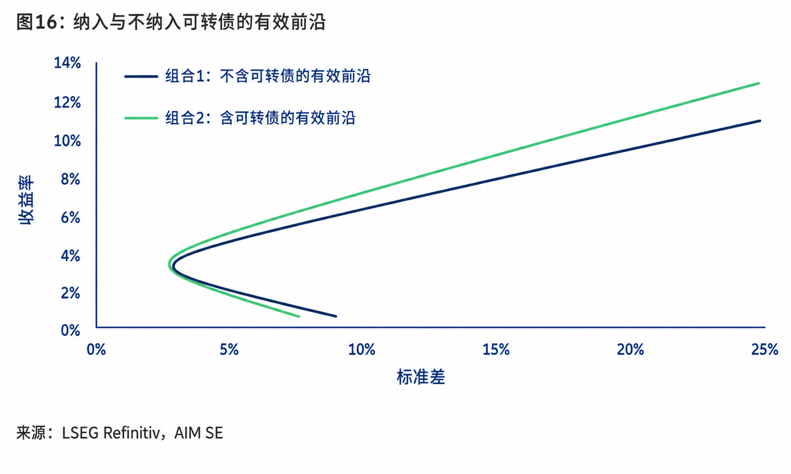
可转债全指优于精选指数
宽基指数跑赢了更精选的指数，尽管后者因风险特征更平衡而常被推荐。投资者在选择比较基准时应谨慎，因为基准选择会显著影响对可转债表现的评估。市场上有多种指数，每种指数都有自己的债券纳入标准。一些指数相当精选，例如FTSE Russell Global Focus Index。它只纳入较大规模发行（在美国市场至少5亿美元）且通常剔除太小或过度股票化的债券。它呈现的是更平衡的图景，避免被少数已大部分转换为股票价值的异常值扭曲。然而总体而言，只有宽基指数（如全球指数）才能捕捉可转债完整机会集，并提供最高收益，如图17所示。
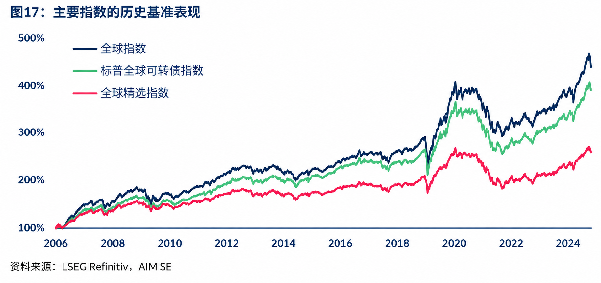
中国市场的可转债指数投资范围有限，仅作为知识拓展即可
中国市场 核心判断
研究样本及口径 本轮研究宇宙为 207 只沪深当前行情样本中日线跨度超过三年、且最近仍有交易记录的可转债。研究面板从 2023-05-19 至 2026-05-18，共 724 个交易日、149,762 条债券-日期记录。
重要边界： 207只长日线当前上市样本，不代表历史全发行样本。该口径有存续样本偏差，适合研究当前可交易长历史池的资产特征和组合表现，不适合直接回答发行制度、退市方式或条款事件问题。
项目 结果 说明 宇宙数量 207只 沪深、日线跨度>3年、最近仍交易 研究区间 2023-05-19 至 2026-05-18 共同可用窗口 估值覆盖 207/207 转股价值、纯债价值、溢价率、双低值 正股覆盖 207/207 后复权用于收益，不复权用于校验 数据原则 月度调仓、等权、不扣成本 输出换手率和成本提示
截面静态研究 价格及特征表现 截至 2026-05-18，207只样本转债均价 151.7 元，价格中位数 132.1 元。价格分布上，低价券不足五分之一，中价券是当前主力，高价券虽然数量较少但显著抬高了均价。
指标 均值/中位数 25分位 75分位 历史分位 转债价格 151.7 / 132.1 124.5 143.4 91.6% 转股价值 113.1 / 96.4 73.0 126.5 92.3% 转股溢价率 53.5% / 35.2% 14.2% 68.8% 3.3% 纯债溢价率 39.3% / 19.8% 12.7% 37.2% 71.1% 双低值 205.2 / 183.1 155.6 213.7 93.0%
价格组 数量 均价 转股溢价率中位数 纯债溢价率中位数 双低值中位数 低价(<120) 36 109.3 39.3% 2.5% 149.5 中价(120-140) 110 130.3 52.5% 18.2% 184.9 高价(>=140) 61 215.5 13.1% 61.7% 185.3
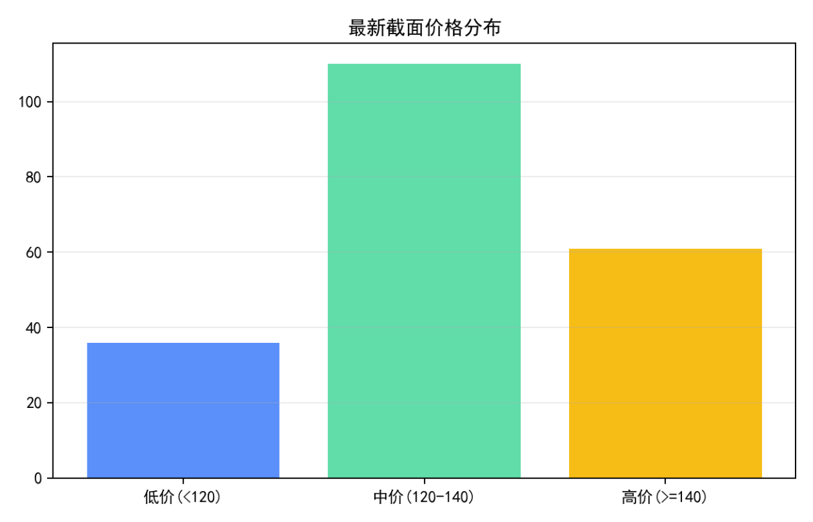
价格分组研究 低价组：债性主导，防守价值高
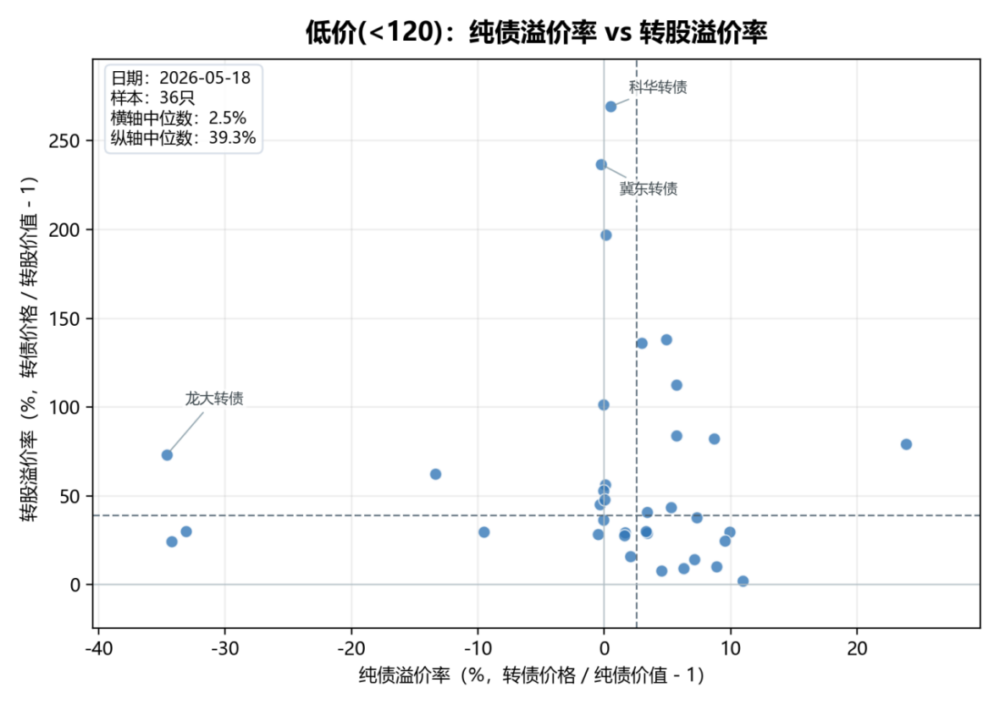
这一组有几个明显特征：
第一，很多低价转债的纯债溢价率接近 0，说明它们已经接近“债券底部定价”。这类品种理论上下行空间相对有限。
第二，纵轴转股溢价率普遍较高，中位数接近 40%，说明低价转债虽然便宜，但多数距离转股价值较远，短期靠正股上涨实现高弹性的难度较大。
中价组：股性偏弱，性价比较低
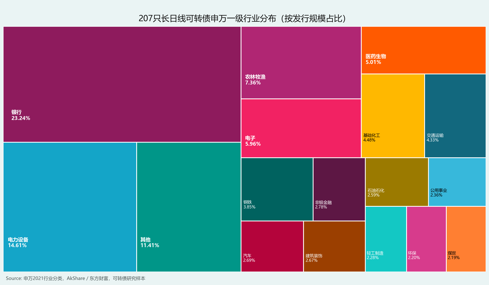
中价债数量最多（110 只），是市场的 “主体部分”。但从分布看，大部分转债处于 “债性一般、股性偏弱” 的状态，既无低价债的安全垫，也无高价债的进攻性，性价比整体不突出。
高价组：近似于股票
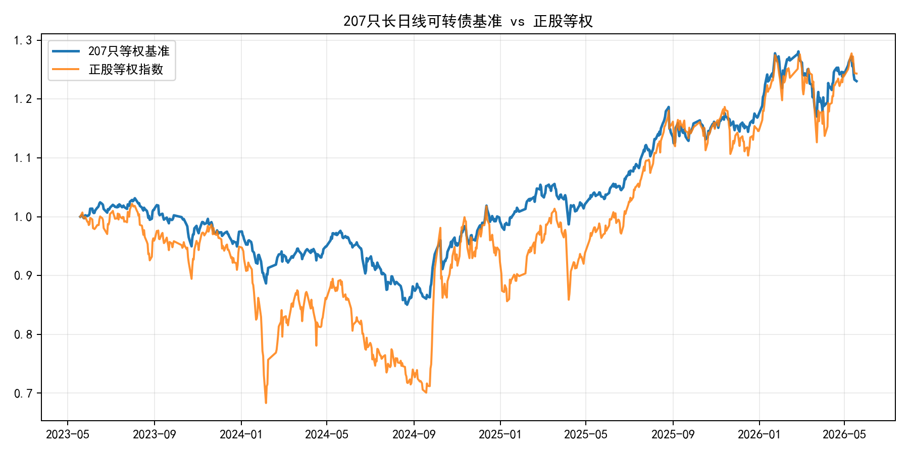
这组的特征非常鲜明：纯债溢价率很高，转股溢价率很低。
这意味着高价转债大多已经脱离纯债价值，价格主要由正股表现和转股价值驱动。它们不再是传统意义上的“债券+期权”的稳健资产，而更接近带有债券外壳的股票替代品。
剩余期限分组研究 剩余期限组 数量 剩余期限中位数 价格中位数 纯债溢价率中位数 转股溢价率中位数 双低值中位数 <=0.5年 41 0.18年 119.5 7.7% 15.9% 153.9 0.5-1年 27 0.60年 132.8 17.8% 27.4% 165.0 1-2年 61 1.60年 131.8 18.9% 43.7% 184.2 2-3年 78 2.51年 135.0 24.8% 39.8% 196.0
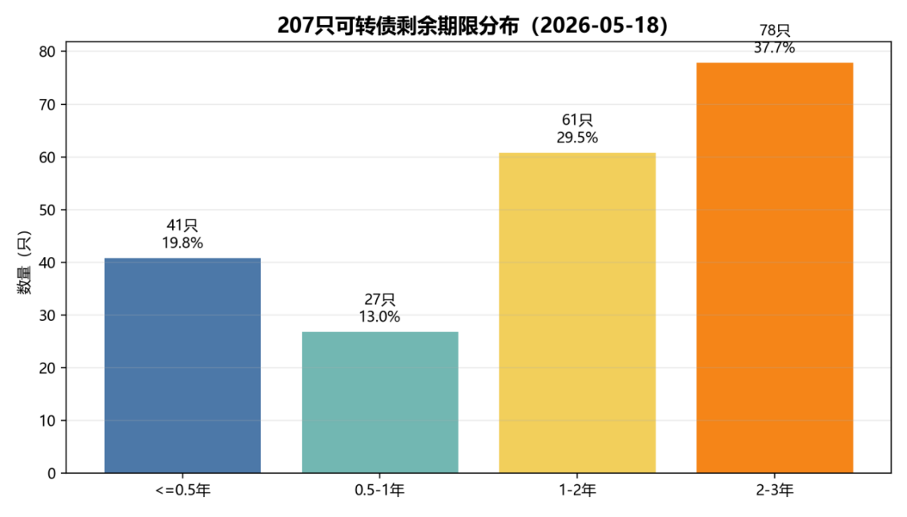
临近到期组（<=0.5年）的纯债溢价率中位数为7.7%，明显低于2-3年组的24.8%。双低值也从153.9上升至196.0。这说明剩余期限越长，市场给予的期权价值和风险偏好溢价越高，债底收敛约束越弱。
价格带结构显示，临近到期组中低价券占比较高，而2-3年组的高价券占比更高。这与期限直觉一致：越接近到期，价格越容易向债底和到期价值收敛；剩余期限越长，权益期权价值越容易保留在价格中。
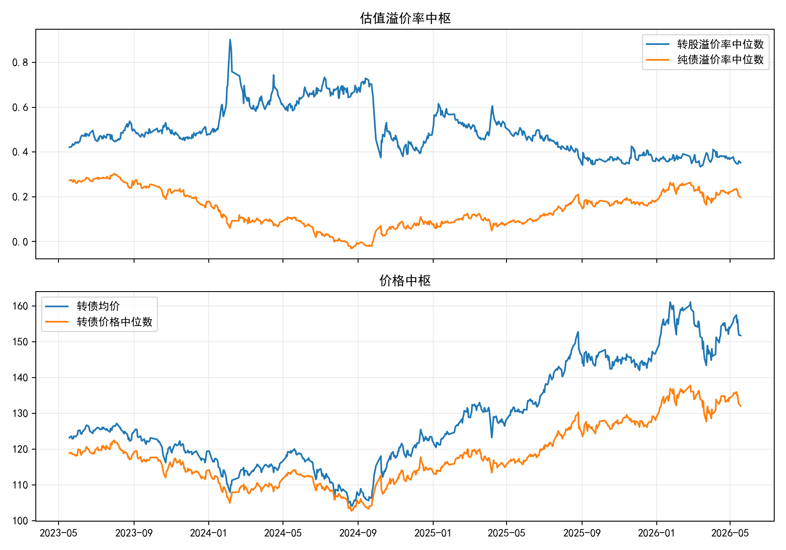
行业分布情况 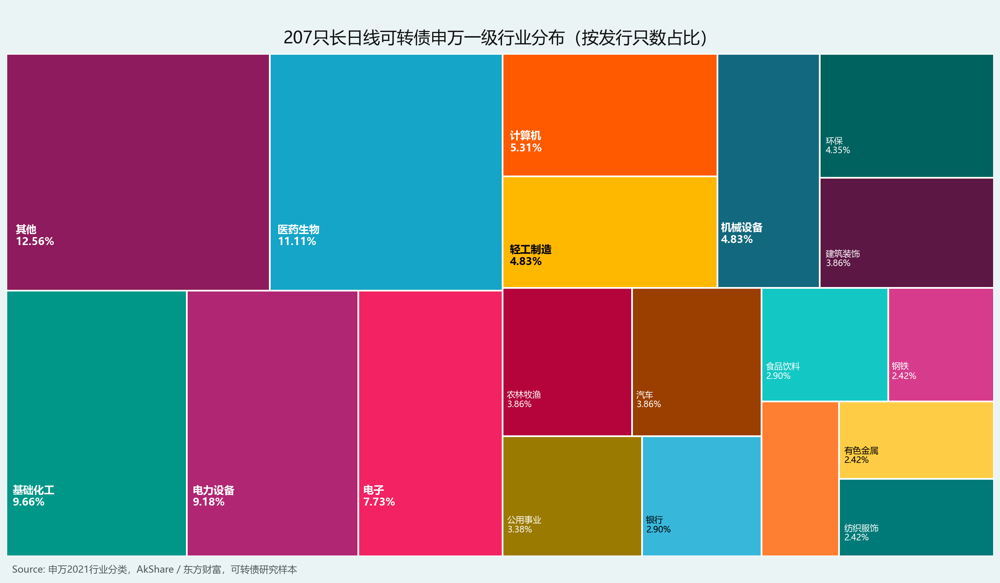
从申万一级行业分布看，207 只长日线可转债在“只数”和“规模”两个口径下呈现出明显差异。按发行只数计算，样本主要集中在医药生物、基础化工、电力设备、电子等中游制造和成长行业，其中医药生物占比最高，为 11.1%，基础化工和电力设备分别为 9.7% 和 9.2%，电子为 7.7%。这说明当前长历史可转债样本在数量上更偏向民营制造业、科技成长和中游周期成长板块，行业覆盖较分散，单一行业集中度不算极端。
但按发行规模计算，行业结构明显向大盘金融和大额发行主体倾斜。银行虽然只有 6 只，占发行只数约 2.9%，但发行规模占比高达 23.2%，成为规模口径下第一大行业；电力设备规模占比也达到 14.6%，显著高于其只数占比。这说明可转债市场存在“数量由中小制造业贡献、规模由大金融和大型产业主体贡献”的结构特征。
动态变化研究 等权基准与正股联动的情况 207只可转债等权基准在样本期累计收益 23.0%，年化收益 7.2%，年化波动 11.1%，最大回撤 -17.6%。正股等权指数同期累计收益 24.3%，但年化波动达到 23.9%，最大回撤 -33.1%。
可转债与正股日收益相关系数为 0.85，上行捕获率 46.0%，下行捕获率 43.6%。这说明样本期可转债保留了约四成多的权益方向暴露，同时把正股下跌日的平均跌幅压缩在相近比例。
序列 累计收益 年化收益 年化波动 最大回撤 夏普 月度胜率 207只等权基准 23.0% 7.2% 11.1% -17.6% 0.65 61.1% 正股等权指数 24.3% 7.6% 23.9% -33.1% 0.32 61.1%
价格分组研究 价格分组采用固定阈值，月末以前一交易日价格归组并持有下月。样本期高价组累计收益 63.2%，明显高于低价组 15.4% 和中价组 17.9%；但高价组最大回撤也达到 -31.7%，风险暴露更接近权益增强。
价格组 累计收益 年化收益 年化波动 最大回撤 月均换手 低价 <120 15.4% 5.0% 9.0% -15.4% 8.9% 中价 120-140 17.9% 5.7% 13.1% -16.9% 24.3% 高价 >=140 63.2% 18.0% 22.4% -31.7% 18.4%
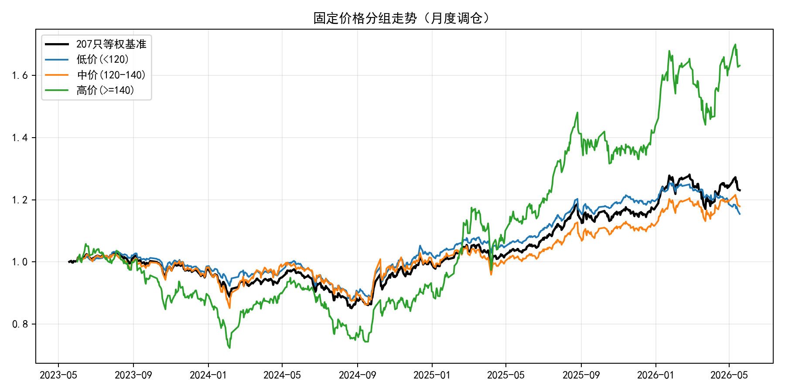
双低策略的表现情况 双低前1/3组合累计收益 23.2%，年化收益 7.3%，最大回撤 -18.5%。双低后1/3组合累计收益 26.0%，反而略高于双低前1/3，说明在 2023-2026 年这个窗口内，双低信号没有呈现稳定单调优势。
本轮研究剔除了条款和事件，且市场自2024年四季度后权益弹性修复明显，高平价/高价格券收益更占优，这会削弱传统双低因子的相对表现。
双低组 累计收益 年化收益 年化波动 最大回撤 月均换手 双低前1/3 23.2% 7.3% 12.6% -18.5% 13.7% 双低后1/3 26.0% 8.1% 10.3% -14.9% 12.1%
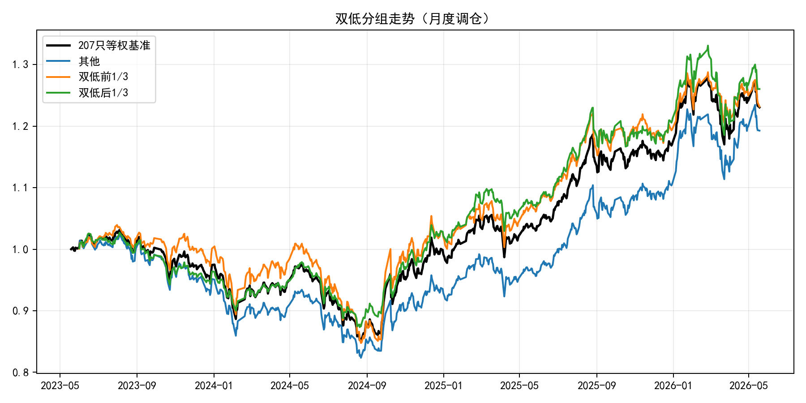
长期估值时序 三年时序显示，转股溢价率中枢在2024年一度处于高位，随后明显回落；与此同时，转债均价和价格中位数自2024年四季度后快速抬升。因此，当前市场不是传统意义上的“低价高溢价”状态，而更接近“高价格、低转股溢价、纯债溢价偏高”的结构。
年度表现统计如下：
年份 基准 正股 低价组 高价组 双低前1/3 双低后1/3 2023 -2.5% -5.1% -1.5% -10.3% 0.1% -3.6% 2024 1.8% -2.7% 3.8% 0.9% 1.9% 6.0% 2025 18.4% 24.1% 17.0% 58.8% 17.3% 18.8% 2026 4.8% 8.5% -3.5% 13.6% 2.9% 3.9%
研究有效性说明 核心结论：207只长日线样本覆盖中证转债指数318只成分中的200只，按指数市值权重解释度为71.1%。动态上，207等权基准与000832.CSI日收益相关性为97.3%，日收益R²为94.6%，年化跟踪误差为2.8%。它适合作为长历史研究代理，但不能完整替代当前指数投资组合。
出于对动态变化研究和数据可得性的考量，我们对交易日低于三年的可转债进行了剔除，为了明确这部分剔除在实质上造成的差异，下面将和可转债指数（000832.CSI） 进行对比，对研究的有效性进行进一步说明。
标的覆盖程度 从样本来看，尽管成分数量覆盖率只有62.9%，但从权重和动态日收益R²来看，207个样本已经能对可转债指数的大部分特征进行精确的刻画：
指标 结果 说明 指数成分数量 318只 剔除数据来源尾行后统计 207样本中属于指数成分 200只 207样本中另有7只未进入指数 成分数量覆盖率 62.9% 按债券只数计算 指数权重覆盖率 71.1% 覆盖指数权重71.1%，未覆盖28.9% 成交金额覆盖率 55.2% 按指数文件当日结算金额计算 动态日收益R² 94.6% 共同区间内207等权基准对000832.CSI日收益的解释比例
从剩余期限来看，和筛选的条件一样，交易日大于3年的可转债基本已经实现全覆盖（可转债的发行期限一般为6年）：
剩余期限 指数成分 指数权重 覆盖成分 覆盖权重 权重覆盖率 <=0.5年 39 9.9% 38 9.8% 99.1% 0.5-1年 23 9.7% 23 9.7% 100.0% 1-2年 63 30.1% 63 30.1% 100.0% 2-3年 77 22.0% 76 21.5% 97.9% >3年 116 28.3% 0 0.0% 0.0%
从价格组来看，近三年新发的债券主要集中在中价和高价组，207样本中没有对这部分特性进行描述：
价格带 指数成分 指数权重 覆盖成分 覆盖权重 权重覆盖率 低价(<120) 39 26.9% 39 26.9% 100.0% 中价(120-140) 142 40.2% 105 30.9% 77.0% 高价(>=140) 137 32.9% 56 13.3% 40.5%
指数走势复刻程度 动态对比采用AkShare获取的中证转债指数000832.CSI历史行情，并与207只样本等权基准在共同交易日上比较。本次共同区间为2023-05-22至2026-05-18。
指标 结果 说明 共同比较区间 2023-05-22 至 2026-05-18 采用207等权基准与000832.CSI共同交易日 共同交易日 723日 剔除首日无收益数据后统计 日收益相关性 97.3% 衡量短期方向和波动同步程度 日收益R² 94.6% 可理解为207样本对指数日收益波动的解释比例 年化跟踪误差 2.8% 207等权基准相对000832.CSI的日收益差异年化波动 Beta 1.09 207等权基准相对指数的弹性 207累计收益 23.0% 共同区间内累计表现 000832累计收益 25.1% 共同区间内累计表现 207最大回撤 -17.6% 共同区间内净值回撤 000832最大回撤 -12.3% 共同区间内净值回撤 最终相对净值 0.984 大于1代表207等权基准期末跑赢指数
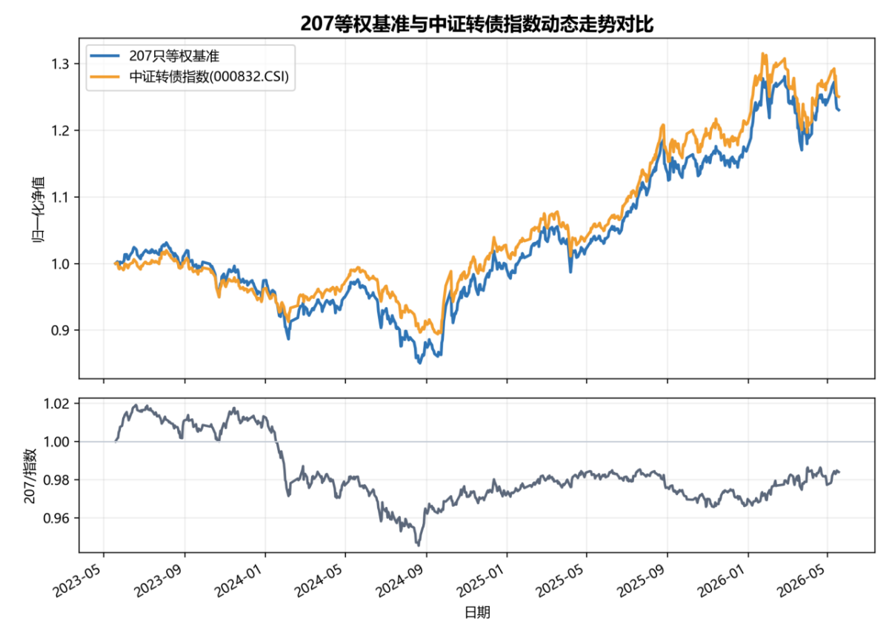
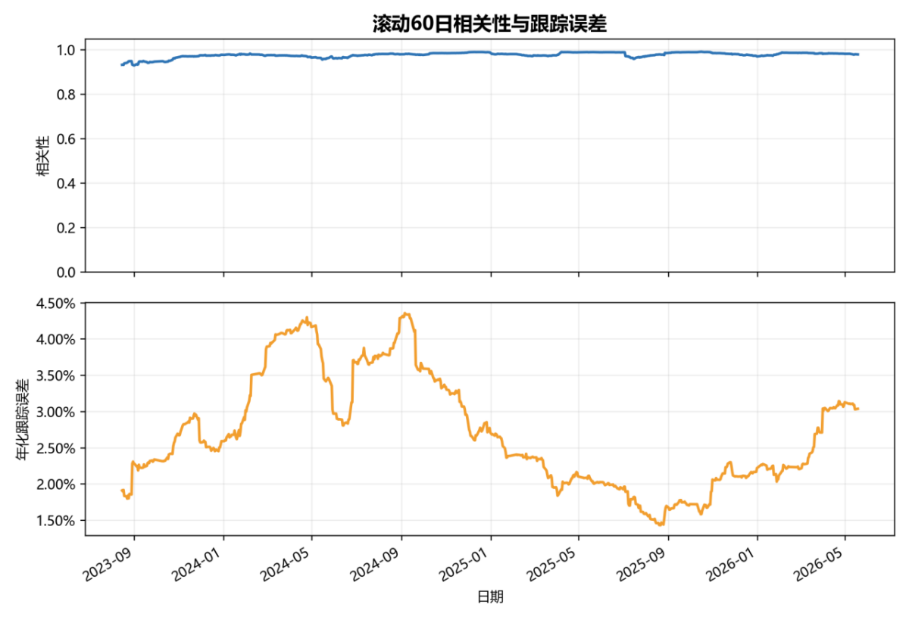
通过走势对比结果来看，207样本的动态变化研究具有高度可信性，已经达到了我们要对可转债进行历史研究的目的。
配置价值分析 基于 207 只长日线当前上市可转债样本，本研究认为：当前可转债指数仍具备一定配置价值，但更适合作为“中等权益弹性 + 下行缓冲”的平衡型资产，而不是低估值防守资产 。
首先，从收益风险特征看，可转债指数的配置效率较高。样本期内，207 只可转债等权基准累计收益约 23.0%，年化收益约 7.2%，与正股等权指数的年化收益基本接近；但可转债年化波动仅约 11.1%，显著低于正股等权指数的 23.9%，最大回撤也由正股的 -33.1% 收窄至 -17.6%。这说明，在过去三年市场环境中，可转债指数并不是依靠更高收益取胜，而是通过较低波动和较浅回撤改善了持有体验和复利效率。
其次，从正股联动看，可转债指数具备较清晰的缓冲属性。可转债与正股日收益相关系数约 0.85，说明其仍然高度受权益市场驱动；但上行捕获率约 46.0%，下行捕获率约 43.6%，在正股极端下跌和月度下跌阶段，下行捕获进一步下降。这意味着可转债指数并不能完全脱离权益市场，但在权益下跌时通常能够压缩损失幅度，在组合中可作为权益资产的低波动替代或增强型防守配置。
但从估值角度看，当前并不是非常舒适的低位配置区间 。截至最新截面，样本转债均价约 151.7 元，价格历史分位约 91.6%；双低值历史分位约 93.0%；纯债溢价率也处在偏高位置。这表明当前可转债整体价格水位不低，债底保护相较低价阶段有所减弱 。与此同时，转股溢价率中位数约 35.2%，处于过去三年较低分位，说明当前高价格更多来自正股平价抬升，而不是单纯由期权溢价扩张推动 。因此，当前配置可转债指数的核心逻辑不应是“便宜”，而应是“保留权益弹性，同时控制组合波动”。
行业结构也决定了配置可转债指数的风险来源。按发行只数看，样本更集中于医药生物、基础化工、电力设备、电子、计算机等制造和成长行业；按发行规模看，银行和电力设备占比明显提升。所以若配置规模加权型指数，则会更偏金融、大型产业主体和偏信用属性。
综合来看，当前可转债指数的配置价值主要体现在三点：第一，相比直接配置正股，可转债指数在历史样本中提供了接近的收益和更低的回撤；第二，相比纯债资产，可转债仍保留较强权益上行参与能力；第三，在市场不确定性较高、但仍希望保留权益敞口的环境下，可转债指数适合作为股债之间的中间资产。
在组合中配置可转债的原因及风险 可转债的优点 减少大类资产轮动时的割裂感 可转债作为兼具股债双重属性的中间类资产，有效弥合了权益与纯债资产的风格割裂问题。传统普林格周期模型中，股债仓位的快速切换直接导致持有体验短板：模型在10年期长周期维度的轮动效果显著，既能实现可观收益，又能规避部分弱势行情，但单年度表现波动较大，部分强势年份可能显著跑输大盘。核心痛点在于，资产轮动信号往往存在领先或滞后，上一周期重仓权益、下一周期转向纯债的大幅调仓操作，容易导致收益捕捉不充分、风险规避不及时。可转债的引入则巧妙化解了这一矛盾，其股债双属性天然适配周期切换的过渡阶段，避免了风格割裂式调仓带来的不必要损耗，让组合不仅在长周期维度表现优异，单年度收益也更具稳定性，显著优化了持有体验。
优化组合的有效前沿、降低波动率 从历史表现来看，可转债凭借“债底保护+看涨期权”的独特结构，天然具备低波动特征，相对权益资产波动率更低，能够有效优化组合的有效前沿。以美国市场为例，无论是互联网泡沫还是金融危机等极端熊市中，可转债的最大回撤均显著低于权益市场；而在牛市行情中，其收益表现仅略低于大盘，真正实现了“进可攻、退可守”的配置价值
可转债的风险 可转债配置需重点关注三类核心风险：
一是定价合理性风险，需区分转债价格上涨的核心驱动因素——是正股基本面推动，还是转债资产供需关系主导。前者多表现为中高价转债价格抬升但转股溢价率仍相对可控；后者则易推高中高价转债的价格与转股溢价率，催生估值泡沫。
二是正股估值风险，需从相对估值维度判断转债对应正股的估值水平，可通过构建“可转债正股PB/沪深300PB”、“可转债正股收益率/沪深300收益率”两大指标，对比正股相对大盘的估值分位，判断其估值是否处于合理区间。
三是股债属性失衡风险，需明确转债当前的股性强弱与债底保护能力，即其在下跌行情中的防御空间，这类问题可通过敏感性测试量化分析，评估不同市场环境下转债的收益弹性与回撤保护效果。
转债自身定价风险 从全市场看，可转债整体定价偏高，但风险总体可控。
价格组 样本数 价格中位数 纯债溢价率中位数 转股溢价率中位数 双低中位数 低价(<120) 40 114.13 3.0% 42.0% 154.29 中价(120-140) 143 131.38 20.6% 54.7% 187.77 高价(>=140) 147 163.81 65.2% 26.4% 205.09
低价组纯债溢价率中位数仅 3%，定价风险极低；中价组纯债与转股溢价率中位数均高于低价组，定价性价比偏弱，但价格中位数约 131，风险仍相对可控；高价组转股溢价率偏低，但纯债溢价率显著抬升，本质上承担更高正股波动风险，与其高弹性定位相符。
正股估值风险 核心风险并非 “相对估值过高”，而在于估值折价能否转化为后续收益。 筛选存续期超过 3 年的 207 只可转债正股，与沪深 300 进行指标对比后发现：可转债正股池长期并未跑输大盘；从等权 PB 口径看，其估值并不贵，反而显著低于自身历史相对估值水平。
股债均衡与偏股弹性风险 在探讨可转债的股性/债性均衡的过程中，核心指标为“账面股价传导系数=转股价值/可转债价格”，含义是：如果正股整体变化1%，转股价值也变化1%，而转股价值占转债价格的比例代表正股价格变化对转债价格的理论影响程度。
单个可转债账面股价传导系数的例子如下：
指标 指数权重口径 说明 有效转债数 318 指数权重口径只统计有000832权重的成分 账面股价传导系数 72.9% 转股价值/转债价格，越高说明越偏股 债底缓冲比例 23.1% 转债价格高于纯债价值的比例 正股-10%情景 -6.1% 指数权重口径估算转债收益 正股+10%情景 7.3% 指数权重口径估算转债收益
基于当前截面，指数权重口径下的账面股价传导系数约为72.9%。这意味着，在不考虑转股溢价率变化、流动性冲击和风险偏好变化的静态假设下，正股整体上涨1%，可转债市场价格约有0.7%左右的上行传导。
情景测算进一步加入债底保护：正股上涨时，估算转债价格等于当前转债价格加上转股价值乘以正股涨幅；正股下跌时，同样先按转股价值传导，再要求估算后的转债价格不低于纯债价值。结果显示，若正股整体下跌10%，可转债市场估算跌幅约为-6.1%；若正股整体上涨10%，估算涨幅约为7.3%。因此，当前可转债市场可以概括为约七成股性暴露，同时仍保留一定债底缓冲。
需要注意的是，本测算属于静态截面分析，主要用于刻画当前市场结构，而不是对未来收益进行预测。实际市场中，可转债价格还会受到转股溢价率变化、利率水平、信用风险、流动性、赎回预期和投资者风险偏好影响；在快速下跌阶段，转债价格也可能阶段性低于理论债底支撑。
资料及数据来源 参考资料：
安联保险集团：2025_12_10_Convertible.pdf
Calamos：Overview CB and MCB.pdf
自建数据库（中国市场部分）：
cb_research_universe_207.csv
cb_research_valuation_207.csv